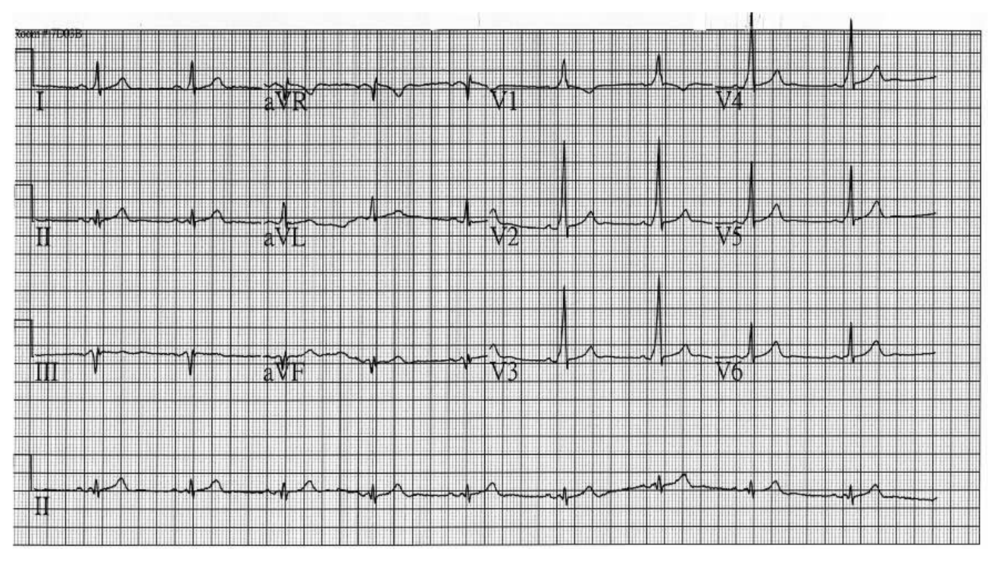
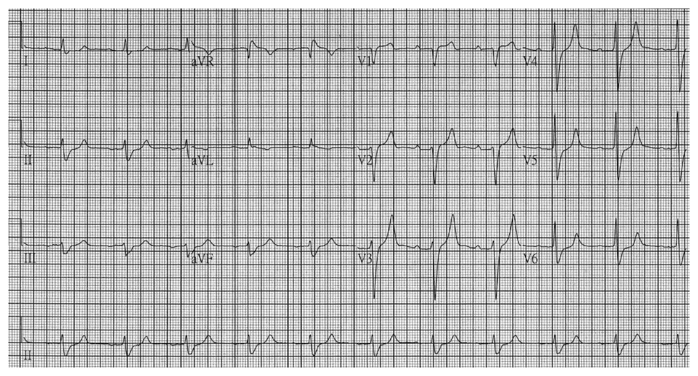
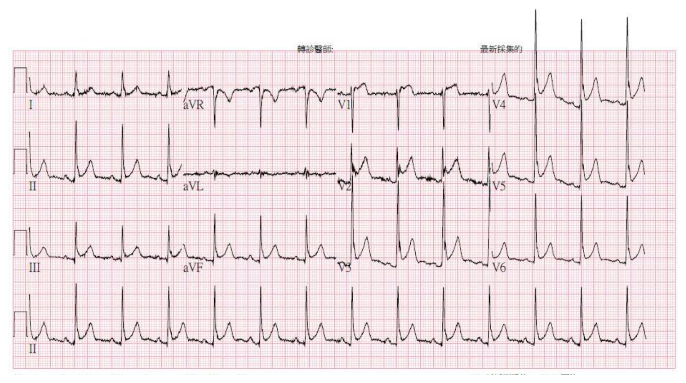
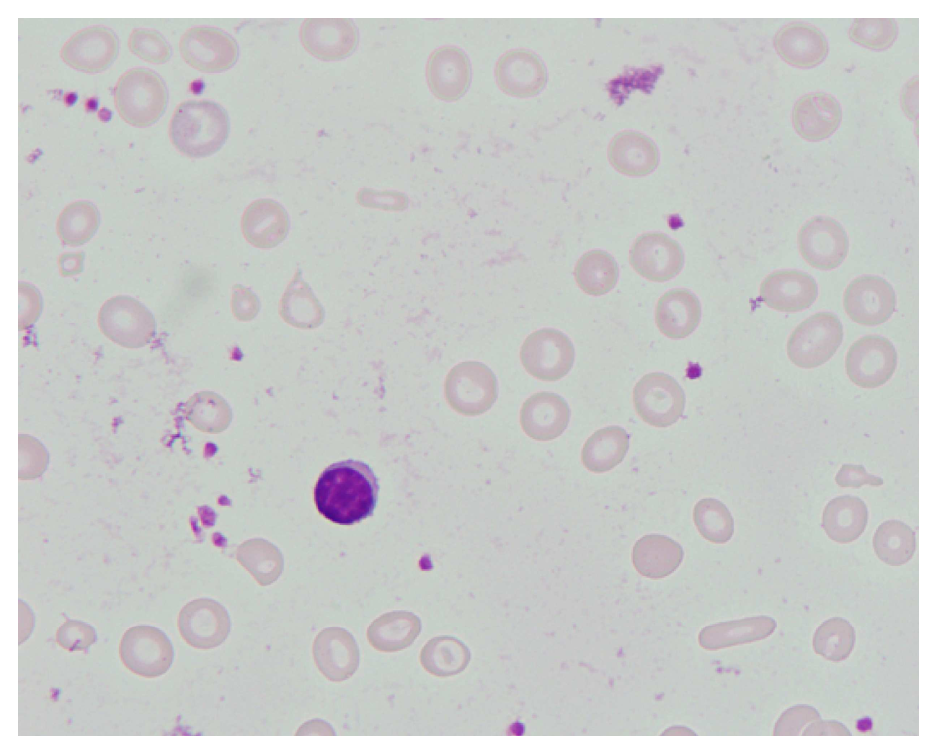
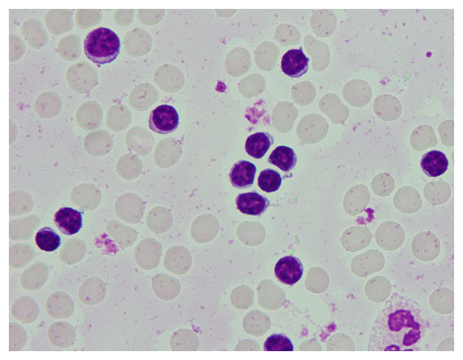
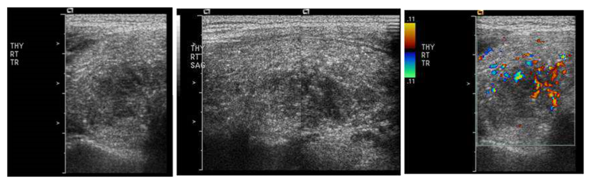

開卷有益 ／
醫師 ／ 醫學（三）（包括內科、家庭醫學科等科目及其相關臨床實例與醫學倫理） ／ 108 年第 1 次108 年第 1 次醫師醫學（三）（包括內科、家庭醫學科等科目及其相關臨床實例與醫學倫理）試題與答案
這一頁是民國 108 年第 1 次醫師醫學（三）（包括內科、家庭醫學科等科目及其相關臨床實例與醫學倫理）的整份歷屆試題，共 80 題，題目與標準答案出自考選部「國家考試試題及測驗式試題答案」開放資料，其中 80 題附有詳解。以下逐題列出題幹、選項與答案；要計時作答或記錄成績，請用線上練習。
考選部原始場次代碼：108030
線上作答這一科 →
全部 80 題
第 1 題
⼀位40歲女性，因⾞禍接受頭部電腦斷層攝影檢查，發現腦下垂體部位有空蝶鞍（empty sella）現象。她⽬前⽉經正常，飯前⾎糖90 mg/dL，PR 80/min，BP 130/80 mmHg，free T4 1.2 ng/dL（normal range 0.8～1.8 ng/dL)， TSH 1.0μIU/mL（normal range 0.1～2.0 μIU/mL），early morning cortisol 15 μg/dL（normalrange 8～18 μg/dL）。下列處置何者最恰當？
（A） 經蝶鞍腦下垂體⼿術（transsphenoid surgery）（B） 放射治療（radiation therapy）（C） 藥物（bromocriptine therapy）（D） 說明病情使病患放⼼（reassurance）答案：（D）
詳解與考點 正解：偶然發現空蝶鞍（empty sella），而題目已提供的月經、血糖、甲狀腺功能與清晨 cortisol 未見異常，且未示腫瘤壓迫證據。就選項而言，最恰當是說明病情並使病患放心；首次發現時仍宜完成基礎腦下垂體荷爾蒙評估，故選 D。
A：經蝶鞍手術用於有需處置的腦下垂體病灶或特定併發症；本例沒有可支持手術的臨床或內分泌異常。
B：放射治療不是單純空蝶鞍的治療，且本例沒有腫瘤證據。
C：bromocriptine 為多巴胺促效劑，常用於高泌乳激素血症等情況；本例沒有相應症狀或檢驗異常。
本題考點：空蝶鞍（empty sella）——可為偶發影像所見；處置取決於是否合併腦下垂體功能異常、視覺症狀或其他病灶，而非影像名稱本身。
第 2 題
⼀位35歲的男性，因為意識不清被家⼈送⾄急診就醫，抽⾎檢查發現⾎鈉過⾼（160 mEq/L，參考值135～145 mEq/L）。有關⾼⾎鈉（hypernatremia）的處理，下列描述何者最適當？
（A） 估算全⾝⽔量（total-body water）：女性是體重的60%，⽽男性是體重的50%（B） 此病患若體重70公⽄，計算free water缺乏量（free-water deficit）約5000 c.c.（C） 不易感知的⽔分流失（insensible losses）約5 mL/kg/day（D） ⾎鈉的矯正儘量不超過10 mM/day，以避免腦部⽔腫（cerebral edema）答案：（D）
詳解與考點 正解：高血鈉 160 mEq/L；矯正時若下降過快，水分移入腦細胞可引起腦水腫。一般處理以血鈉下降不超過約 10 mEq/L/day 為安全原則，故選 D；但急性與慢性高血鈉的實際矯正速率仍須依發生時間與病人狀態調整。
A：全身水量（total-body water）估算通常男性約為體重的 60%、女性約為體重的 50%，本選項將兩者顛倒。
B：若以男性 70 kg 估算，總體水量約為 70×0.6=42 L；free-water deficit 約為 42×(160/140-1)＝6 L，而非約 5000 c.c.。
C：不易感知水分流失（insensible losses）不只 5 mL/kg/day，本選項明顯低估日常呼吸與皮膚水分流失。
本題考點：高血鈉（hypernatremia）——先估算全身水量與自由水缺乏量（free-water deficit）；慢性或病程不明時須避免過快矯正，以降低腦水腫風險。
第 3 題
⼀位35歲男性因慢性腹瀉就醫，此症狀在食⽤麵粉製品後會加劇，少吃會較緩解。⾎液學檢查顯⽰⾎紅素11.5gm/dL，⽩⾎球及⾎⼩板正常，⽽⽣化學檢查顯⽰⾎鈣稍低（2.15 mmol/L，正常2.2～2.5 mmol/L），⾎清肌酸酐（creatinine，0.6 mg/dL）、鈉（139 mEq/L）及鉀（3.8 mEq/L）則在正常範圍，⾎中IgA tissuetransglutaminase antibody為陽性。此病⼈最可能的診斷為何？
（A） irritable bowel syndrome（B） celiac disease（C） eosinophilic gastroenteritis（D） Crohn's disease答案：（B）
詳解與考點 正解：食用麵粉製品後慢性腹瀉惡化、貧血、低血鈣與 IgA tissue transglutaminase antibody 陽性，這組合指向麩質誘發的小腸黏膜病變，也就是 celiac disease，故選 B。
A：irritable bowel syndrome 可有腹痛與排便型態改變，但不會典型造成貧血、低血鈣或特異性 IgA tissue transglutaminase antibody 陽性。
C：eosinophilic gastroenteritis 可造成腸胃症狀，但題目沒有嗜酸性球增多或過敏相關線索，且抗體結果更支持 celiac disease。
D：Crohn's disease 可造成慢性腹瀉與營養不良，但與麵粉製品關聯及 IgA tissue transglutaminase antibody 陽性不符。
本題考點：乳糜瀉（celiac disease）——麩質相關小腸病變可導致腹瀉與吸收不良；IgA tissue transglutaminase antibody 是重要血清學線索。
第 4 題
下列各項有關瓣膜性⼼臟病的敘述，何者正確？
（A） ⼆尖瓣狹窄最常⾒的原因是風濕性（rheumatic）慢性發炎造成，常⾒在四、五⼗歲女性，臺灣近年病例數有減少趨勢（B） ⾺凡⽒症候群（Marfan's syndrome）是主動脈瓣逆流的原因之⼀，聽診時病⼈胸前有舒張期雜⾳，且第⼆⼼⾳（S2）變⼤聲（C） 主動脈瓣或⼆尖瓣急性逆流達中度以上、且伴有⼼衰竭症狀時，不應使⽤⾎管擴張劑，並應及早開⼑治療（D） 單純主動脈瓣狹窄或單純⼆尖瓣狹窄病患，⼼導管均顯⽰左⼼室舒張末壓（LVEDP）升⾼答案：（A）
詳解與考點 正解：二尖瓣狹窄最常見病因。風濕性心臟病（rheumatic heart disease）的慢性瓣膜損害是二尖瓣狹窄最常見原因，且常見於中年女性；隨風濕熱減少，臺灣病例數亦有下降趨勢，故選 A。
B：Marfan's syndrome 可造成主動脈根部擴張與主動脈瓣逆流，舒張期雜音的描述合理；但主動脈瓣逆流常見周邊脈壓增大與第二心音減弱，而非 S2 變大聲。
C：急性主動脈瓣或二尖瓣逆流合併心衰竭時，適當情況下血管擴張可降低後負荷、改善前向血流；本選項稱不應使用，方向錯誤。
D：主動脈瓣狹窄可使左心室壓力負荷增加而影響 LVEDP，但二尖瓣狹窄的主要壓力上升在左心房，不能說兩者都必然使 LVEDP 升高。
本題考點：二尖瓣狹窄（mitral stenosis）——最常見病因為風濕性心臟病；急性瓣膜逆流（acute valvular regurgitation）常須兼顧後負荷降低與及時介入。
第 5 題
⼀位23歲男性因⼼悸⾄⾨診檢查，⼼電圖顯⽰如下圖，其附屬路徑或旁道（accessory pathway）最可能位在何處？

（A） 右⼼室側壁（right free wall）（B） 左⼼室側壁（left lateral ventricle）（C） 前中膈（anterior septum）（D） 後中膈（posterior septum）答案：（B）
詳解與考點 正解：心電圖可見 PR 間期縮短及 QRS 起始部鈍化的 delta wave，符合 Wolff-Parkinson-White syndrome。胸前導程自 V2 至 V6 呈優勢正向波，且 V1 起始去極化並非典型右側旁道的顯著負向型態；配合肢體導程的初始向量，最符合左心室側壁的附屬路徑，故選 B。
A：右心室側壁旁道的早期去極化通常由右向左，常在 V1 呈較明顯的負向 delta wave 與負向 QRS 起始，與圖中胸前導程的傳導方向不符。
C：前中膈旁道位於房室交界前方，常造成與本圖不同的早期胸前導程向量，不能以左側胸前導程優勢正向波的型態解釋。
D：後中膈旁道較常使下壁導程的 delta wave 呈負向，反映早期去極化向上；本圖整體預激向量較支持左側自由壁而非後中膈位置。
本題考點：預激症候群（pre-excitation syndrome）與 Wolff-Parkinson-White syndrome 的心電圖特徵，包括短 PR 間期、delta wave 與增寬 QRS；附屬路徑定位（accessory pathway localization）可依各導程 delta wave 與 QRS 初始向量推估。
第 6 題
⼀位82歲男性，有⾼⾎壓與慢性腎臟疾病，主訴最近疲倦無⼒，⾎壓152/90 mmHg，呼吸15次/分，⼼跳65次/分，體溫36.5℃，⼼電圖顯⽰如下圖，其最可能為何種電解質異常？

（A） ⾼⾎鈣症（hypercalcemia）（B） 低⾎鈣症（hypocalcemia）（C） ⾼⾎鉀症（hyperkalemia）（D） 低⾎鉀症（hypokalemia）答案：（C）
詳解與考點 正解：心電圖胸前導程可見高而尖、基部狹窄的帳篷狀 T 波（peaked T waves），並可見 P 波較不明顯，為高血鉀症（hyperkalemia）的典型早期心電圖表現。病人合併慢性腎臟疾病，鉀離子排除能力下降，也支持高血鉀症，故選 C。
A：高血鈣症主要使心電圖的 QT 間期縮短，並非圖中突出的尖峰 T 波表現，故不符。
B：低血鈣症典型造成 QT 間期延長，主要是 ST 段延長；不會造成圖中所見廣泛高尖的 T 波，故不符。
D：低血鉀症較常見 T 波低平或倒置、ST 段下降及明顯 U 波；圖中反而是 T 波增高且尖銳，方向相反，故不符。
本題考點：高血鉀症（hyperkalemia）的心電圖變化——早期為高尖 T 波，惡化時可出現 P 波變小或消失、PR 間期延長與 QRS 波增寬；慢性腎臟疾病（chronic kidney disease）因腎臟排鉀受損，是高血鉀症的重要危險因子；低血鉀症（hypokalemia）則以低平 T 波與 U 波為代表性鑑別。
第 7 題
⼀位36歲女性無任何過去病史，因連續3⽇胸痛⾄急診求診。胸痛於特定姿勢可較緩解。她否認近⽇有使⽤藥物或創傷史，但⽬前有喉嚨痛等感冒症狀。抽⾎檢查發現D-dimer與⼼肌酶正常，但⽩⾎球與發炎指數（hsCRP）均有輕微升⾼現象。⼼電圖檢查如下圖所⽰。⼼臟超⾳波檢查顯⽰⼼臟收縮功能正常，且無局部室壁活動異常（regional wall motion abnormality），可⾒少量⼼包膜積液。其最可能診斷為何？

（A） 急性冠⼼病（B） ⼼肌炎（C） ⼼包膜炎（D） 肺栓塞答案：（C）
詳解與考點 正解：病人有感冒前驅症狀、隨姿勢改變而緩解的胸痛、輕度發炎反應及少量心包膜積液；心電圖可見多個肢體與胸前導程廣泛 ST 段上升，並非侷限於單一冠狀動脈灌流區，符合急性心包膜炎（acute pericarditis）。正常心肌酶、無局部室壁活動異常也支持非急性心肌梗塞，故選 C。
A：急性冠心病的 ST 段上升通常對應特定冠狀動脈灌流區，常有相對導程的 ST 段下降，並可伴隨心肌酶上升與局部室壁活動異常；本圖為廣泛導程變化，且檢驗與超音波結果不符。
B：心肌炎（myocarditis）可在病毒感染後出現胸痛與心電圖異常，但常見心肌受損指標升高、心室收縮功能下降或局部／瀰漫性壁運動異常。本例以姿勢性胸痛、典型廣泛 ST 段變化及心包膜積液為主，較符合心包膜炎。
D：肺栓塞（pulmonary embolism）可造成胸痛與發炎反應，但 D-dimer 正常使其可能性低；其心電圖較可能出現竇性心搏過速或右心負荷表現，無法解釋本圖廣泛 ST 段上升及心包膜積液。
本題考點：急性心包膜炎（acute pericarditis）的典型表現為病毒前驅症狀、姿勢性或呼吸性胸痛、廣泛 ST 段上升與心包膜積液；急性冠心病（acute coronary syndrome）多呈特定血管灌流區的變化，並以心肌酶與局部室壁活動異常協助鑑別。
第 8 題
⼀位28歲女性因運動性呼吸困難⼤約半年⾄⼼臟科⾨診求診。病患否認有胸悶，端坐呼吸或陣發性夜間呼吸困難情形，⼤約在1週前突發性⼼悸不適狀況。⾝體診察發現有隨呼吸固定第⼆⼼⾳分裂（fixed splitting S2）以及輕微收縮期⼼雜⾳。⼼電圖顯⽰⼼軸右偏（right axis deviation）及V1 rSR’。胸部X光顯⽰右⼼房及肺動脈擴⼤。該病患最可能診斷為何？
（A） ⼼房中膈缺損（atrial septal defect）（B） ⼼室中膈缺損（ventricular septal defect）（C） 主動脈縮窄（coarctation of the aorta）（D） 法洛⽒四合症（tetralogy of Fallot）答案：（A）
詳解與考點 正解：固定分裂第二心音（fixed splitting S2），合併右心房與肺動脈擴大、右軸偏移及 V1 rSR’。這些都是心房中膈缺損（atrial septal defect, ASD）造成左向右分流、右心容量負荷的典型表現，故選 A。
B：心室中膈缺損常有較明顯的全收縮期雜音，並非固定分裂 S2 的典型原因。
C：主動脈縮窄常見上下肢血壓或脈搏差異，與右心擴大及固定分裂 S2 不符。
D：法洛氏四合症多在較早年齡出現發紺與右向左分流表現，胸部影像和聽診特徵也不相同。
本題考點：心房中膈缺損（atrial septal defect）——左向右分流造成右心與肺動脈容量負荷；固定分裂第二心音（fixed splitting S2）是重要理學檢查線索。
第 9 題
王先⽣接受上下肢⾎壓的檢查，下肢dorsalis pedis artery收縮壓為90 mmHg，上臂測得的⾎壓為150/75mmHg，平均⾎壓為100 mmHg，以下敘述何者正確？
（A） ankle-brachial index為0.6（B） 因下肢少了舒張壓的資料，無法計算ankle-brachial index（C） ankle-brachial index為0.9（D） 因下肢測量部位為dorsalis pedis artery，無法計算ankle-brachial index答案：（A）
詳解與考點 正解：ankle-brachial index（ABI）以踝部最高收縮壓除以上肢最高收縮壓計算，不需要下肢舒張壓。本例 ABI=90 mmHg÷150 mmHg=0.6，故選 A。
B：ABI 的公式只使用收縮壓，缺少下肢舒張壓不影響計算。
C：0.9 不是題示數值的計算結果；90÷150 的商為 0.6。
D：dorsalis pedis artery 是可用於測得踝部收縮壓的血管之一，並不妨礙 ABI 計算。
本題考點：踝肱指數（ankle-brachial index, ABI）——ABI＝踝部收縮壓／上肢收縮壓；數值下降提示下肢周邊動脈疾病（peripheral artery disease）的可能。
第 10 題
李先⽣因呼吸困難⽽到醫院就診，在診間醫師問完病史後，就作⾝體診察，其中包括了abdominojugularreflex，結果發現原本無異樣的頸靜脈有明顯的⿎漲，⾄少在鎖骨上超過5公分。下列敘述何者最恰當：
（A） ⼤⾎管動脈端有pressure overload（B） 有volume overload（C） 為紐約⼼臟協會的⼼衰竭功能分類（NYHA functional classification）的第四級（D） 有左側⼼衰竭答案：（B）
詳解與考點 正解：abdominojugular reflex 陽性：腹部加壓後頸靜脈持續明顯鼓漲，表示右心無法容納增加的靜脈回流，反映充血與容量負荷（volume overload），故選 B。
A：此檢查主要反映靜脈回流、右心充盈壓與容量狀態，不是大血管動脈端 pressure overload 的指標。
C：NYHA functional classification 依症狀與活動耐受度分級，不能單憑 abdominojugular reflex 陽性判定為第四級。
D：陽性結果可見於左右心衰竭造成的鬱血狀態，但不是左側心衰竭專屬；它看似與心衰竭相關，然而選項 B 對病理生理的描述較精確。
本題考點：腹頸靜脈逆流（abdominojugular reflex）——持續腹壓使頸靜脈壓明顯上升，提示右心充盈壓升高與靜脈鬱血；容量負荷（volume overload）是核心概念。
第 11 題
下列改變⾎⾏動⼒學（hemodynamics）的動作，與⼼臟雜⾳之間的關係何者錯誤？
（A） 當雙⼿緊握時（hand grip），僧帽瓣閉鎖不全的雜⾳強度會因為⾎流增加⽽增加（B） 當病患進⾏佛薩⽡⽒壓⼒均衡呼吸法（Valsalva maneuver）時，如果是主動脈狹窄的病患雜⾳⻑度與強度都會減少（C） 當病患進⾏完佛薩⽡⽒壓⼒均衡呼吸法（Valsalva maneuver）後，⼼臟右側雜⾳恢復到原來強度的速度快於左側的⼼雜⾳（D） 當從坐姿站立時，若有⼼室出⼝阻塞性⼼肌病變（hypertrophic obstructive cardiomyopathy, HOCM）時，⼼雜⾳聲⾳會因為⾎流減少⽽減弱答案：（D）
詳解與考點 正解：由坐姿站立使靜脈回流與前負荷下降。肥厚型阻塞性心肌病（hypertrophic obstructive cardiomyopathy, HOCM）在左心室腔變小時動態流出道阻塞更嚴重，因此雜音會增強而非減弱；本選項錯誤，故選 D。
A：雙手緊握增加後負荷，二尖瓣閉鎖不全時逆流量增加，雜音通常增強，敘述正確，故非答案。
B：Valsalva maneuver 的用力期使前負荷下降，主動脈狹窄的跨瓣血流減少，雜音強度與長度減少，敘述正確，故非答案。
C：Valsalva maneuver 結束後，右心先接受增加的靜脈回流，右側雜音通常比左側雜音更早恢復，敘述正確，故非答案。
本題考點：心雜音的動態聽診（dynamic auscultation）——前負荷降低通常使多數雜音變弱，但 HOCM 因流出道阻塞加重而變強；後負荷增加可使二尖瓣逆流雜音增強。
第 12 題
有關⼼臟⾎管系統的⾝體檢查與評估，下列何者錯誤？
（A） 所謂differential cyanosis指的是發紺現象單獨出現在下肢，要考慮有從右到左的⾎液分流（shunting）病態⽣理現象（B） 當⽪膚看起來有點像青銅⾊的⾊素沉積之際，⼼衰竭的鑑別診斷要考量⾎⾊素沈著病（hemochromatosis）（C） ⾺凡⽒症（Marfan's syndrome）除了⾝形瘦⻑之外，在牙齦上的表現常常是有較低的牙腭⼸（low-archedpalate）（D） 所謂的杵狀指（clubbing finger）是暗⽰著病患可能有從右到左的⾎液分流（shunting）病態⽣理現象答案：（C）
詳解與考點 正解：Marfan's syndrome 的口腔特徵。馬凡氏症常見高拱顎（high-arched palate），不是低牙腭弓（low-arched palate），因此 C 的敘述錯誤，故選 C。
A：differential cyanosis 指下肢較上肢明顯發紺，需考慮合併右向左分流的病理生理，例如特定型態的動脈導管病變，敘述正確，故非答案。
B：青銅色色素沉積可提示血色素沉著病（hemochromatosis），其心肌受累可造成心衰竭或心肌病變，敘述正確，故非答案。
D：杵狀指可見於慢性低氧狀態，右向左分流性先天性心臟病是重要鑑別，敘述正確，故非答案。
本題考點：馬凡氏症（Marfan's syndrome）——結締組織異常可有長肢型體態與高拱顎（high-arched palate）；理學檢查的發紺與杵狀指可提示慢性右向左分流（right-to-left shunt）。
第 13 題
下列有關利⽤肝穿刺診斷各種病毒性肝炎相關之肝臟疾病的敘述，何者錯誤？
（A） 若肝穿刺檢體太⼩將無法提供⾜夠的資訊，檢體⻑度應⾄少達到0.5 cm（B） 慢性C型肝炎引起的纖維化，初始階段常發⽣於portal及periportal area（zone 1）（C） 非酒精性脂肪肝病引起的纖維化，初始階段好發於中⼼肝⼩靜脈（central perivenular）附近（zone 3）（D） 嚴重腹⽔或是凝⾎功能異常延⻑時不能進⾏肝穿刺檢查答案：（A）
詳解與考點 正解：肝穿刺檢體長度的最低要求。肝纖維化與發炎分布可能不均，檢體過小會增加取樣誤差；0.5 cm 通常不足以提供可靠的分期資訊，因此 A 的敘述錯誤，故選 A。
B：慢性 C 型肝炎的纖維化常從 portal 與 periportal area（zone 1）開始，敘述正確，故非答案。
C：非酒精性脂肪肝病的早期纖維化常在 central perivenular 區域（zone 3）出現，敘述正確，故非答案。
D：嚴重腹水或顯著凝血異常會提高經皮肝穿刺的出血風險，須避免或改採較安全的途徑，敘述正確，故非答案。
本題考點：肝切片（liver biopsy）——足夠檢體可降低取樣誤差；慢性 C 型肝炎多為門脈區周圍纖維化（portal/periportal fibrosis），非酒精性脂肪肝病早期常見 zone 3 纖維化。
第 14 題
肝穿刺是診斷肝臟纖維化的黃⾦標準，但有其臨床應⽤的困難與判讀上的限制。非侵入性肝纖維化檢測是可⾏的替代⽅案，⽽且⽬前臨床上已經逐漸廣為採⽤。下列有關各種非侵入性肝纖維化檢測⽅法的描述，何者錯誤？
（A） 兩⼤檢測主流包括利⽤⾎清⽣物學標誌檢測以及利⽤儀器檢測肝臟的硬度（B） ⾎清⽣物學標誌檢測（如FibroTest）對於各種原因引起的肝臟疾病都可以精準判定各等級肝纖維化程度（C） transient elastography（如FibroScan）可以快速簡單的檢測肝臟硬度，但對於過度肥胖與有腹⽔之患者測定能⼒會降低（D） magnetic resonance elastography（MRE）判定各等級肝纖維化程度的能⼒比transient elastography好答案：（B）
詳解與考點 正解：「各種原因」與「精準判定各等級」這兩個過度絕對的說法。血清生物學標誌檢測如 FibroTest 的表現會受肝病病因、發炎、膽汁鬱積與其他生理因素影響，不能對所有肝病都精準區分每一級肝纖維化；B 錯誤，故選 B。
A：非侵入性肝纖維化檢測的兩大方向確為血清生物學標誌（serum biomarkers）與肝臟硬度評估（elastography），敘述正確，故非答案。
C：transient elastography 如 FibroScan 操作快速，但過度肥胖與腹水會限制量測或降低可靠性，敘述正確，故非答案。
D：magnetic resonance elastography（MRE）整體診斷表現通常優於 transient elastography，尤其在某些量測受限情境，敘述正確，故非答案。
本題考點：非侵入性肝纖維化評估（noninvasive fibrosis assessment）——血清生物標誌與彈性影像是兩大類工具；檢驗表現須依病因與臨床情境解讀，不能取代所有情況的肝切片（liver biopsy）。
第 15 題
有關B型肝炎病毒的敘述，下列何者錯誤？
（A） 帶原者周邊⾎液中，數量最多的是22 nm⼤⼩的病毒顆粒，外觀為球形或⻑絲狀（B） 42 nm⼤⼩的病毒顆粒，為雙外殼結構，分別為表⾯（surface）及核⼼（core）蛋⽩，數量僅有22 nm病毒顆粒的1/100到1/1,000（C） 病毒的核衣殼（nucleocapsid）⼤⼩為27 nm，具有表⾯抗原（HBsAg），病毒DNA和DNA聚合酶（D） B型肝炎病毒的e抗原（HBeAg），包含部分核前（precore）區蛋⽩及導引⾄內質網的訊號區答案：（C）
詳解與考點 正解：HBV 完整病毒粒子與核衣殼抗原的組成。HBV 的 27 nm 核衣殼含 core protein（HBcAg）、病毒 DNA 與 DNA polymerase；HBsAg 是包覆核衣殼的外套膜表面抗原，不在核衣殼內。因此（C）把 HBsAg 說成核衣殼成分，敘述錯誤，故選 C。
A：帶原者血中最常見的是過量分泌的 22 nm HBsAg 次病毒顆粒，可呈球形或絲狀，並非感染性完整病毒，敘述正確。
B：42 nm 的 Dane particle 是具外套膜與核衣殼的完整 HBV，數量遠少於 22 nm 次病毒顆粒，敘述正確。
D：HBeAg 是由 precore 區相關產物經訊號序列導向分泌路徑形成的抗原，反映病毒複製與傳染性，敘述正確。
本題考點：B 型肝炎病毒（hepatitis B virus, HBV）結構；表面抗原（HBsAg）位於外套膜、核心抗原（HBcAg）位於核衣殼；Dane particle 與 22 nm 次病毒顆粒的區別。
第 16 題
50歲的B型肝炎男性病⼈，肝臟內有⼀顆8公分的肝細胞癌併有肝⾨靜脈主幹腫瘤栓塞（main portal veintumor thrombosis），及多處肺部轉移。病⼈沒有肝硬化，肝臟沒有任何失代償現象，沒有黃疸，沒有腹⽔。以下那⼀種治療最適合這位病⼈？
（A） 肝臟移植（B） ⼿術切除（C） 無線射頻燒灼術（radiofrequency ablation）（D） 標靶治療（sorafenib）答案：（D）
詳解與考點 正解：8 cm HCC 合併主幹門靜脈腫瘤栓塞及肺部轉移，代表已是不可局部根除的晚期病灶；雖肝功能代償良好，但仍須以全身性治療處理。題目所列選項中，sorafenib 為晚期肝細胞癌的標靶全身治療，故選 D。
A：肝臟移植可同時處理肝癌與肝硬化，但肺部遠端轉移與主幹門靜脈腫瘤栓塞表示腫瘤已超出移植適應情境，無法藉移植達到合理的腫瘤控制。
B：肝切除看似適合「沒有肝硬化、肝功能良好」者，但本例已有主幹門靜脈侵犯與多處肺轉移，手術無法處理全身性腫瘤負荷。
C：無線射頻燒灼術適用於較小且可局部治療的肝內病灶；8 cm 腫瘤合併血管侵犯與肺轉移，超出其局部治療範圍。
本題考點：肝細胞癌（hepatocellular carcinoma, HCC）分期治療；門靜脈腫瘤栓塞（portal vein tumor thrombosis）與遠端轉移提示晚期疾病；全身性標靶治療（systemic targeted therapy）的角色。
第 17 題
對於肝腎症候群（hepatorenal syndrome）的敘述，何者正確？
（A） 肝腎症候群可分為第⼀型及第⼆型。 第⼀型的特徵是比較穩定，預後較佳，第⼆型的特徵是腎功能在1～2星期內就逐漸惡化（B） 肝腎症候群通常是發⽣於沒有腹⽔的病⼈（C） 可⽤來治療肝腎症候群的藥物有terlipressin（D） 由於腎實質已經受損，就算是進⾏肝臟移植，肝腎症候群也不會改善答案：（C）
詳解與考點 正解：肝腎症候群屬嚴重肝病造成的功能性腎血流下降，腎臟本身通常沒有不可逆實質損傷。以血管收縮劑 terlipressin 合併血容量支持可改善有效動脈循環與腎灌流，是肝腎症候群的治療選項，故選 C。
A：第 1 型的特徵是腎功能在短期內快速惡化、預後較差；較穩定且常伴難治性腹水的是第 2 型，選項將兩者顛倒。
B：肝腎症候群通常發生於晚期肝硬化並有腹水的病人；沒有腹水不是典型臨床背景。
D：肝腎症候群主要是血流動力異常造成的功能性腎衰竭，肝臟移植後可望改善；此選項把它誤當成固定的腎實質破壞。
本題考點：肝腎症候群（hepatorenal syndrome）；第 1 型與第 2 型的病程差異；terlipressin 與肝臟移植對功能性腎衰竭的治療意義。
第 18 題
關於發炎性腸道疾病（inflammatory bowel disease, IBD）的敘述，下列何者正確？①發病⾼峰期在20⾄40歲②其發⽣率在亞洲已開發國家有上升趨勢③出⽣第⼀年有使⽤抗⽣素的嬰兒，未來發⽣發炎性腸道疾病的風險比較⾼④有接受過闌尾切除⼿術（appendectomy），可以顯著降低發⽣潰瘍性⼤腸炎（ulcerative colitis）與克隆⽒症（Crohn's disease）的風險
（A） 僅①②（B） 僅①②③（C） 僅②④（D） ①②③④答案：（B）
詳解與考點 正解：四項 IBD 流行病學與危險因子中，前 3 項成立而第 4 項過度概括。IBD 常在 20～40 歲發病；亞洲已開發地區發生率有上升趨勢；嬰兒早期使用抗生素與日後 IBD 風險上升有關。闌尾切除與潰瘍性大腸炎風險降低的關聯，不能推論為同時顯著降低克隆氏症，故正確組合為僅①②③，選 B。
A：此選項漏掉③。早期抗生素暴露可能經由腸道微生物相與免疫發育改變，和日後 IBD 風險上升有關。
C：此選項漏列①③，且納入④。④看似把闌尾切除的保護性關聯延伸到所有 IBD，但對克隆氏症不能作此一概而論。
D：①②③正確，但④錯誤；闌尾切除對兩種疾病風險的影響並不相同。
本題考點：發炎性腸道疾病（inflammatory bowel disease, IBD）流行病學；抗生素暴露與腸道微生物相（gut microbiota）；潰瘍性大腸炎（ulcerative colitis）與克隆氏症（Crohn's disease）的危險因子差異。
第 19 題
關於⼤腸癌的症狀，何者正確？
（A） 右側⼤腸癌以排便異常為主，左側⼤腸癌因容易出⾎故以貧⾎為主（B） ⼤腸癌因為曝露在腸道，容易因糞便摩擦⽽出⾎，因此即便是第⼀期癌症也很容易有症狀（C） 近年來⼤腸癌的發⽣，右側⼤腸癌個案顯著多於左側⼤腸與直腸癌個案（D） ⼤腸癌所造成的貧⾎為⼩球性貧⾎答案：（D）
詳解與考點 正解：大腸癌的慢性隱性出血會耗盡鐵質。鐵缺乏使血紅素合成不足，紅血球體積變小，故大腸癌造成的貧血典型為小球性貧血（microcytic anemia），選 D。
A：右側大腸腔徑較大，腫瘤常以慢性隱性出血與缺鐵性貧血表現；左側病灶較易造成排便習慣改變或阻塞症狀，選項左右顛倒。
B：早期大腸癌常無症狀，正因如此篩檢重要；腫瘤暴露於糞便不表示第 1 期就會容易出現可察覺症狀。
C：大腸癌的部位分布會隨族群與年代改變，不能以「右側顯著多於左側與直腸」作為一般性的症狀判讀依據。
本題考點：大腸直腸癌（colorectal cancer）臨床表現；右側與左側病灶症狀差異；缺鐵性小球性貧血（iron-deficiency microcytic anemia）。
第 20 題
關於Zollinger-Ellison syndrome下列何者敘述正確？
（A） 成因為beta cell endocrine tumor不正常分泌gastrin，導致胃酸⼤量分泌，造成難治性潰瘍（B） 在peptic ulcer disease的病患中可占0.1～1%，此症狀發⽣gastrinoma，它與multiple endocrine neoplasia（MEN）type 1相關（C） 在clinical presentation上以peptic ulcer及erosive esophagitis為主，下消化道腹瀉的症狀相當罕⾒（D） Zollinger-Ellison syndrome之gastrinoma罕有惡性的可能性，腫瘤遠處轉移的狀況相當少⾒答案：（B）
詳解與考點 正解：Zollinger-Ellison syndrome 由 gastrinoma 過量分泌 gastrin，造成胃酸分泌過多與難治性消化性潰瘍，且與 MEN1 有關。它在消化性潰瘍病人中所占比例很低，故（B）為正確敘述。
A：gastrinoma 來源是 gastrin 分泌細胞腫瘤，而非 beta cell endocrine tumor；beta cell 主要分泌 insulin。
C：高胃酸進入小腸可使黏膜受損並影響脂肪消化，因此腹瀉並不罕見；此選項只注意到潰瘍與食道炎，漏掉重要的下消化道表現。
D：gastrinoma 有惡性與轉移的可能，尤其肝轉移會影響預後；說成罕有惡性與遠端轉移並不正確。
本題考點：Zollinger-Ellison syndrome；胃泌素瘤（gastrinoma）與胃泌素（gastrin）過量；多發性內分泌腫瘤第 1 型（multiple endocrine neoplasia type 1, MEN1）。
第 21 題
關於胰臟癌的敘述，下列何者正確？
（A） 抽菸是胰臟癌的重要危險因⼦，約有20～25%的胰臟癌與抽菸有關（B） ⼤約有80%以上的胰臟癌有遺傳傾向，如germline mutations：STK11 gene、BRCA2、p16/CDKN2A、PALB2等（C） 篩檢胰臟癌，⾎清學檢驗CA19-9及CEA都有相當不錯的敏感度及陽性預測值（D） 晚期遠處轉移之胰臟癌的第⼀線治療為gemcitabine，使⽤此藥物治療，病患⼀年的存活率可達70%答案：（A）
詳解與考點 正解：胰臟癌的可修正危險因子。抽菸是胰臟癌重要危險因子，約有 20～25% 病例可歸因於抽菸，故選 A。
B：少數胰臟癌與遺傳性症候群或胚系突變有關，不能說 80% 以上具有遺傳傾向；列出的基因雖是高風險家族評估的重要線索，比例卻被誇大。
C：CA19-9 與 CEA 都不能作為一般族群胰臟癌篩檢工具，受敏感度、特異性及陽性預測值限制；腫瘤標記看似方便，但不等於可有效篩檢。
D：轉移性胰臟癌的全身治療選擇取決於病人狀態與腫瘤特性，gemcitabine 並不代表治療後 1 年存活率可達 70%，選項誇大療效。
本題考點：胰臟癌（pancreatic cancer）危險因子；吸菸（smoking）與可歸因風險；腫瘤標記（tumor marker）在篩檢的限制。
第 22 題
72歲男性為慢性腎病病⼈，⾎中肌酸酐（creatinine）6.3 mg/dL，下列何種酸鹼電解質狀態最少發⽣在此病⼈？
（A） 鈉（Na+）148 mEq/L（B） 鉀（K+）5.6 mEq/L（C） 磷（PO43-）5.5 mg/dL（D） 鈣（Ca++）8.0 mg/dL答案：（A）
詳解與考點 正解：嚴重慢性腎病會使腎臟排鉀、排磷與活化維生素 D 的能力下降。故高鉀血症、高磷血症與低血鈣都常見；相較之下，高鈉血症並非慢性腎病典型的固有電解質型態，最少發生的是（A）Na+ 148 mEq/L，故選 A。
B：腎臟排鉀能力下降，尤其合併酸中毒或使用影響腎素－血管張力素系統的藥物時，K+ 5.6 mEq/L 常可見。
C：腎臟排磷減少會造成磷滯留，PO4 5.5 mg/dL 符合慢性腎病的礦物質代謝異常。
D：腎臟活化維生素 D 減少及高磷血症會降低血鈣，Ca++ 8.0 mg/dL 是常見方向。
本題考點：慢性腎病礦物質與骨代謝異常（chronic kidney disease-mineral and bone disorder, CKD-MBD）；高磷血症（hyperphosphatemia）；低血鈣（hypocalcemia）與高鉀血症（hyperkalemia）。
第 23 題
65歲女性病⼈因⻑期糖尿病腎病變，接受規則⾎液透析治療已5年，透析前⾎中磷（PO43-）6.8 mg/dL、鈣（Ca++）10.8 mg/dL、副甲狀腺賀爾蒙（PTH）88 pg/mL。對此病⼈，下列何者為最適當治療？
（A） 使⽤磷結合劑（phosphate binder）（B） 使⽤維他命D3（vitamin D3）（C） 使⽤擬鈣劑（calcimimetic）（D） 使⽤鈣濃度3.0 mEq/L透析液答案：（A）
詳解與考點 正解：透析病人磷 6.8 mg/dL 偏高，且鈣 10.8 mg/dL 已偏高。首要處理是降低腸道磷吸收，使用磷結合劑（phosphate binder）；並應避免再增加鈣負荷，故選 A。
B：vitamin D3 可增加腸道鈣、磷吸收，且此病人血鈣已高、PTH 並未顯著升高，使用它可能加重高鈣與高磷。
C：擬鈣劑主要用於抑制明顯次發性副甲狀腺機能亢進；本例 PTH 88 pg/mL 並非題幹所示的主要治療問題。
D：提高透析液鈣濃度會增加鈣負荷，與已存在的高血鈣相反。
本題考點：透析病人高磷血症（hyperphosphatemia）；磷結合劑（phosphate binder）；慢性腎病礦物質與骨代謝異常（CKD-MBD）的鈣磷平衡。
第 24 題
48歲男性末期腎病病⼈，接受⻑期免疫抑制劑治療，移植前無糖尿病病史，移植3個⽉後⾎中肌酸酐0.8mg/dL，飯前⾎糖210 mg/dL，下列何種藥物最有可能產⽣此種合併症？
（A） mycophenolate mofetil（B） tacrolimus（C） sirolimus（D） everolimus答案：（B）
詳解與考點 正解：腎移植後新發高血糖，且腎功能穩定，應聯想到免疫抑制藥物的糖尿病副作用。tacrolimus 是 calcineurin inhibitor，可抑制胰島素分泌並造成移植後糖尿病，故選 B。
A：mycophenolate mofetil 的主要不良反應是腸胃道症狀與骨髓抑制，並非典型造成新發糖尿病的藥物。
C：sirolimus 也可能影響代謝，但題目所考最典型的移植後糖尿病藥物是 tacrolimus；兩者看似都屬移植免疫抑制劑，關鍵在 tacrolimus 的胰島毒性較具代表性。
D：everolimus 為 mTOR inhibitor，常見問題包括血脂異常、傷口癒合不良等，並非本題最可能原因。
本題考點：移植後糖尿病（post-transplant diabetes mellitus, PTDM）；tacrolimus；鈣調神經磷酸酶抑制劑（calcineurin inhibitor）不良反應。
第 25 題
針對嘔吐導致急性腎損傷的病⼈，欲區分prerenal或intrinsic病因，下列何項指標最為適合？
（A） fractional excretion of sodium（B） urine-to-plasma urea ratio（C） fractional excretion of chloride（D） urine osmolality答案：（C）
詳解與考點 正解：嘔吐導致氯離子流失與代謝性鹼中毒，此時用 fractional excretion of chloride（FECl）最能反映腎臟是否正在保留氯。prerenal 狀態下腎臟會強力保留氯、FECl 偏低；若為 intrinsic 腎損傷，腎小管重吸收受損、FECl 較高，故選 C。
A：fractional excretion of sodium 是常用區分指標，但嘔吐造成鹼中毒時碳酸氫鹽排出可伴鈉排出，使 FENa 的判讀較易受干擾。
B：urine-to-plasma urea ratio 可協助評估腎前性狀態，但不是本例氯離子流失情境下最具針對性的指標。
D：urine osmolality 可反映尿液濃縮能力，卻會受多種因素影響，對嘔吐合併鹼中毒的 prerenal 鑑別不如 FECl 直接。
本題考點：腎前性急性腎損傷（prerenal acute kidney injury）；分率排泄氯（fractional excretion of chloride, FECl）；嘔吐造成的氯離子流失與代謝性鹼中毒（metabolic alkalosis）。
第 26 題
下列何種疾病所造成的急性腎損傷，其⾎液檢驗結果最少發⽣eosinophilia？
（A） microscopic polyangiitis（B） atheroembolic disease（C） NSAID-induced interstitial nephritis（D） polyarteritis nodosa答案：（A）
詳解與考點 正解：官方答案為 A。atheroembolic disease 與 NSAID-induced interstitial nephritis 都可伴 eosinophilia；官方答案以 microscopic polyangiitis 的壞死性腎絲球腎炎通常不伴嗜酸性球增多作答。惟 polyarteritis nodosa 亦非典型 eosinophilia 疾病，A 與 D 的比較缺乏可由題幹辨別的可靠判準，故此題有爭議。
B：atheroembolic disease 常伴 eosinophilia、低補體血症及皮膚缺血表現，eosinophilia 是重要線索。
C：NSAID-induced interstitial nephritis 屬藥物相關急性間質性腎炎，雖 NSAID 型態未必都有典型發燒、皮疹與 eosinophilia，仍可出現嗜酸性球增多。
D：polyarteritis nodosa 為中型血管炎，並非 eosinophilia 的典型代表；因此它也是 A 的重要競爭選項，不能僅憑疾病類型斷言較常出現 eosinophilia。
本題考點：嗜酸性球增多（eosinophilia）可見於膽固醇栓塞（atheroembolic disease）與急性間質性腎炎（acute interstitial nephritis）；ANCA 相關血管炎與 polyarteritis nodosa 的比較須依臨床表現判讀。
第 27 題
依照2012年最新之KDIGO（Kidney Disease：Improving Global Outcomes）準則，下列診斷急性腎損傷（acute kidney injury）之定義何者錯誤？
（A） ⾎清肌酸酐值於48⼩時內上升幅度⼤於或等於0.3 mg/dL（B） ⾎清肌酸酐值於5天內上升幅度⼤於或等於25%（C） ⾎清肌酸酐值於⼀星期內上升幅度⼤於或等於50%（D） 尿液每⼩時之排出量少於0.5 mL/kg，並持續6⼩時答案：（B）
詳解與考點 正解：KDIGO 急性腎損傷定義的時間窗與肌酸酐門檻。KDIGO 可用 48 小時內血清肌酸酐上升至少 0.3 mg/dL，或 7 天內上升至基準值至少 1.5 倍，或尿量少於 0.5 mL/kg/h 持續 6 小時診斷。故「5 天內上升至少 25%」不是此定義，錯誤的是 B。
A：48 小時內肌酸酐上升至少 0.3 mg/dL 符合 KDIGO 的診斷條件。
C：一星期內上升至少 50% 等同於達基準值 1.5 倍的概念，符合 KDIGO 的時間窗與幅度。
D：尿量少於 0.5 mL/kg/h 且持續 6 小時，是 KDIGO 的尿量診斷條件。
本題考點：急性腎損傷（acute kidney injury, AKI）；KDIGO 診斷定義；血清肌酸酐（serum creatinine）與尿量（urine output）標準。
第 28 題
⼀位18歲男性⼤學新⽣，⼀星期前入學體檢報告正常。三天前參加新⽣盃籃球比賽後關節酸痛，⾃⾏購買⽌痛藥（diclofenac）服⽤後開始出現⼩便泡沫與腳腫，故⾄⾨診求診。無嘔吐、腹瀉、發燒與頻尿症狀。理學檢查發現：⾎壓160/90 mmHg，呼吸速率每分鐘20下，四肢出現紅疹，雙下肢4+⽔腫。⾎液檢查：尿素氮（BUN）52 mg/dL、肌酸酐：2.0 mg/dL，⽩蛋⽩1.8 g/dL，⽩⾎球7,000/μL，⾎⾊素10.2 g/dL，膽固醇320 mg/dL，三酸⽢油脂（triglyceride）260 mg/dL。尿液檢查：紅⾎球2～3顆/HPF，⽩⾎球3～5顆/HPF，尿液總蛋⽩質與肌酸酐比值為12 g/g Cr。下列何項為最可能的診斷？
（A） hemolytic uremic syndrome（B） minimal change disease（C） rapidly progressive glomerulonephritis（D） IgA nephropathy答案：（B）
詳解與考點 正解：突然出現大量蛋白尿（尿蛋白／肌酸酐比 12 g/g Cr）、嚴重水腫、低白蛋白血症與高脂血症，構成腎病症候群（nephrotic syndrome）。年輕成人在 NSAID 暴露後出現此表現，最符合 minimal change disease；少量尿紅血球不會否定腎病症候群，故選 B。
A：hemolytic uremic syndrome 應有微血管溶血性貧血、血小板低下與急性腎損傷的組合，題幹沒有這些關鍵證據，也無典型腹瀉前驅症狀。
C：rapidly progressive glomerulonephritis 常呈腎炎症候群，包括明顯血尿、紅血球圓柱與腎功能快速惡化；本例最突出的卻是大量蛋白尿、低白蛋白血症與高脂血症所構成的腎病症候群。
D：IgA nephropathy 常以肉眼或顯微血尿為主，可有蛋白尿，但通常無法最佳解釋如此大量蛋白尿、4+ 水腫與顯著高脂血症。
本題考點：腎病症候群（nephrotic syndrome）；微小病變（minimal change disease）；非類固醇消炎止痛藥（NSAID）相關腎小球病變。
第 29 題
⾼尿酸⾎症（hyperuricemia）是造成痛風（gout）的最主要原因，下列關於造成⾼尿酸⾎症的敘述何者正確？
（A） hypoxanthine phosphoribosyl transferase（HPRT）基因位在X染⾊體上，當此基因突變時會造成⾼尿酸⾎症（B） uric acid由肝臟代謝，因此肝臟功能不全時會造成⾼尿酸⾎症（C） 利尿劑（diuretics）會增加尿酸從尿液排出⽽降低⾎中尿酸（D） acute myeloid leukemia（AML）在化學治療時會產⽣⾼尿酸⾎症，因此可⽤benzbromarone來預防⾼尿酸⾎症答案：（A）
詳解與考點 正解：HPRT 缺陷會使嘌呤再利用（purine salvage）下降，增加 de novo purine synthesis，最終增加尿酸生成。HPRT 基因位於 X 染色體，突變可造成高尿酸血症，故選 A。
B：尿酸主要由肝臟產生，但人體缺乏 uricase 將其進一步代謝；尿酸清除主要仰賴腎臟與腸道排泄，不能把肝功能不全當成典型原因。
C：利尿劑常使有效循環量下降並增加近端小管尿酸再吸收，反而降低尿酸排泄、升高血中尿酸。
D：AML 化學治療可因 tumor lysis syndrome 造成高尿酸血症；預防須依風險使用 allopurinol 抑制尿酸生成或 rasburicase 分解尿酸。benzbromarone 為促尿酸排泄藥，會增加尿路尿酸負荷，不是此情境的標準預防藥。
本題考點：高尿酸血症（hyperuricemia）；次黃嘌呤鳥嘌呤磷酸核糖轉移酶（hypoxanthine-guanine phosphoribosyltransferase, HPRT）；腫瘤溶解症候群（tumor lysis syndrome）與尿酸處理。
第 30 題
關於calcium pyrophosphate deposition（CPPD）和calcium apatite deposition引起的關節炎之敘述，下列何者錯誤？
（A） CPPD引起的急性關節炎與急性痛風性關節炎（acute gouty arthritis）臨床表現很相似（B） CPPD引起的急性關節炎常發⽣在年輕男性，因此要利⽤關節液結晶分析來和其他關節炎做鑑別診斷（C） calcium apatite deposition引起的關節與關節附近發炎，更容易發⽣在慢性腎臟衰竭合併有hyperphosphatemia的病⼈（D） CPPD與calcium apatite deposition結晶引起的關節炎皆可⽤colchicine和glucocorticoid治療答案：（B）
詳解與考點 正解：CPPD 急性關節炎的流行病學。CPPD 常見於年長者，與年齡、代謝疾病及關節退化相關，不是「常發生在年輕男性」；關節液結晶分析雖重要，但前半句錯誤，因此錯誤的是 B。
A：CPPD 急性發作可有突發紅、腫、熱、痛，臨床上確實與急性痛風相似，須以關節液結晶鑑別。
C：慢性腎臟衰竭合併高磷血症時，鈣磷代謝失衡可促進 calcium apatite deposition 相關的關節與關節周邊發炎，敘述正確。
D：CPPD 急性發炎使用 colchicine 與 glucocorticoid 的臨床應用較確立；calcium apatite deposition 則以症狀治療、NSAID 與局部處置為主，colchicine 僅有有限資料。此選項將兩者治療地位並列，表述不夠精確，但不改變（B）流行病學敘述的明顯錯誤。
本題考點：焦磷酸鈣沉積症（calcium pyrophosphate deposition disease, CPPD）；假性痛風（pseudogout）；鈣磷灰石沉積（calcium apatite deposition）與晶體性關節炎。
第 31 題
有關多發性肌炎（polymyositis）的敘述，下列何者正確？
（A） statin類藥物會引發類似polymyositis的表現（B） 在⼤於50歲的發炎性肌⾁病變（inflammatory myopathies）患者中，polymyositis是最常⾒的診斷（C） 關節攣縮（joint contractures）常發⽣於polymyositis（D） ⽪下鈣化（subcutaneous calcifications）常發⽣於polymyositis答案：（A）
詳解與考點 正解：statin 可造成發炎性或免疫介導的肌病，表現為近端肌無力與肌酵素上升，臨床上可類似 polymyositis。因此（A）正確，故選 A。
B：50 歲以上新發的發炎性肌病需特別考慮其他亞型與惡性腫瘤相關性，不能說 polymyositis 必為最常見診斷。
C：關節攣縮並非 polymyositis 的典型主要表現；其核心是對稱性近端肌無力。
D：皮下鈣化較常和 juvenile dermatomyositis 或 dermatomyositis 相關，並非 polymyositis 的常見特徵。
本題考點：多發性肌炎（polymyositis）；statin-associated myopathy；發炎性肌病（inflammatory myopathy）與皮肌炎（dermatomyositis）的鑑別。
第 32 題
有關顳動脈⾎管炎（temporal arteritis）的敘述，下列何者正確？
（A） 屬於中⼩型⾎管炎（B） 常常與風濕性多肌痛（polymyalgia rheumatica）⼀起發⽣（C） 好發於20～40歲女性（D） 通常對類固醇的治療反應不佳答案：（B）
詳解與考點 正解：顳動脈血管炎屬大血管炎，且與風濕性多肌痛有明顯臨床關聯。許多病人可同時或先後出現 polymyalgia rheumatica，故（B）正確。
A：顳動脈血管炎屬大血管炎（large-vessel vasculitis），主要侵犯主動脈及其較大分支，不是中小型血管炎。
C：此病幾乎只發生於 50 歲以上者，並非 20～40 歲女性。
D：顳動脈血管炎通常對 corticosteroid 反應良好，且疑有視覺缺血時需及早治療以避免視力永久受損。
本題考點：巨細胞動脈炎（giant cell arteritis）；風濕性多肌痛（polymyalgia rheumatica）；大血管炎（large-vessel vasculitis）與類固醇（corticosteroid）治療。
第 33 題
40歲李女⼠約3年前診斷為全⾝性紅斑狼瘡（systemic lupus erythematosus），除發病時曾有關節腫痛與⽪膚紅斑外，近2年病情尚稱穩定。李女⼠過去驗⾎就知道⾎中的抗⼼脂抗體（anticardiolipin antibodies）很⾼，為正常上限值的3倍，但過去並不曾發⽣⾎管栓塞。本次因左腿急性腫痛⾄急診室求診，影像學檢查⾒左腿有深部靜脈栓塞（deep vein thrombosis）。下列處置何者最為適當？
（A） 加上aspirin，每⽇100毫克（B） 加上⼝服warfarin，希望⽬標international normalized ratio（INR）2.0～2.5（C） 應立即⽤⾼劑量類固醇治療（D） 加上新型抗凝⾎藥物（new oral anticoagulants, NOAC）本題送分，無標準答案
詳解與考點 本題官方公告送分。
第 34 題
已知肝細胞癌（hepatocellular carcinoma, HCC）有不同的etiologic factors，且這些factors在不同地區和國家促成肝癌發⽣的重要性也不盡相同。以下有關「地區或國家：該地區或國家最重要的etiologic factor ofHCC」的組合中，何者正確？
（A） Europe & US：Hepatitis B chronic infection and Wilson's disease（B） China：Hepatitis C chronic infection and nonalcoholic steatohepatitis（C） Africa：Aflatoxin B1 and hepatitis B chronic infection（D） Taiwan：Ethanol chronic consumption and primary biliary cirrhosis答案：（C）
詳解與考點 正解：不同地區肝細胞癌最重要病因的流行病學差異。非洲許多地區的 HCC 與慢性 HBV 感染及 aflatoxin B1 暴露密切相關，兩者並可協同增加致癌風險，故正確組合為 C。
A：歐洲與美國的 HCC 重要病因包括慢性 HCV、酒精與代謝性脂肪肝疾病；Wilson's disease 不是該地區最重要的病因組成。
B：中國的 HCC 最重要病毒性病因是慢性 HBV 感染，不是以慢性 HCV 與非酒精性脂肪肝炎為主。
D：臺灣 HCC 的重要病因以慢性 HBV、HCV 感染為主，不能以長期 ethanol 使用與 primary biliary cirrhosis 作為最重要組合。
本題考點：肝細胞癌（hepatocellular carcinoma, HCC）病因；慢性 B 型肝炎（chronic hepatitis B）與黃麴毒素 B1（aflatoxin B1）；地理流行病學（geographic epidemiology）。
第 35 題
有關「⾎清CA19-9值」於胰臟癌（pancreatic ductal adenocarcinoma）診療上的敘述，何者正確？
（A） 「⾎清CA19-9值的升⾼」是診斷胰臟癌的必要條件（B） 「⾎清CA19-9值的升⾼」建議使⽤於胰臟癌的篩檢（screening）（C） 「⼿術前⾎清中CA19-9值」與病患胰臟癌的期別（stage）具相關性（D） 「⼿術後⾎清中CA19-9值」與病患的預後無關答案：（C）
詳解與考點 正解：術前 CA19-9 與胰臟癌期別的關係。CA19-9 雖不是可單獨確診的檢查，但術前血清值較高通常反映較大的腫瘤負荷或較進展的疾病，與期別具有相關性，可用於病情評估與追蹤，故選 C。
A：胰臟癌可以沒有 CA19-9 升高，例如部分個體無法表現此抗原；因此（A）把升高說成診斷必要條件過度絕對。
B：CA19-9 的敏感度與特異性不足，膽道阻塞等良性狀況也可能升高，不能作為一般無症狀族群的篩檢工具。它看似是腫瘤標記就可篩檢，卻忽略偽陽性與偽陰性。
D：術後 CA19-9 的下降或持續升高可協助評估切除效果、殘存疾病與復發風險，和預後並非無關。
本題考點：醣類抗原 19-9（carbohydrate antigen 19-9, CA19-9）是胰臟癌的輔助性腫瘤標記；腫瘤標記（tumor marker）宜用於病情與治療反應追蹤，不可取代確診或族群篩檢。
第 36 題
關於原發性肺癌的敘述，何者錯誤？
（A） 鱗狀上⽪癌（squamous cell carcinoma）是⽬前最常⾒的組織型態（B） 腺癌（adenocarcinoma）會有腺泡（acinar）、乳突（papillary）、⿂鱗（lepidic）、固態（solid）等的型態（C） 跟吸菸相關性⾼的是鱗狀上⽪癌、⼩細胞癌（small-cell carcinoma）（D） 表⽪⽣⻑因⼦受體（epidermal growth factor receptor）突變常出現於腺癌答案：（A）
詳解與考點 正解：題目問錯誤敘述；原發性肺癌目前最常見的組織型態是腺癌（adenocarcinoma），不是鱗狀上皮癌，故（A）錯誤。
B：肺腺癌可呈現腺泡、乳突、鱗屑樣生長（lepidic）及固態等生長型態，敘述正確，非答案。
C：鱗狀上皮癌與小細胞癌均和吸菸有強烈關聯，敘述正確，非答案。
D：表皮生長因子受體（EGFR）突變主要見於肺腺癌，且是重要的標靶治療生物標記，敘述正確，非答案。
本題考點：非小細胞肺癌（non-small-cell lung cancer）以肺腺癌最常見；吸菸相關肺癌（smoking-related lung cancer）尤其包括鱗狀上皮癌與小細胞癌；EGFR mutation 常見於肺腺癌。
第 37 題
⼀位46歲女性因為常常頭暈，爬樓梯時感到很喘⽽來醫院求診。⾝體檢查除臉⾊與結膜蒼⽩之外，並無其他明顯異常。患者⾎壓106/76 mmHg，脈搏每分鐘72次，規則⼼跳，無發燒，亦無體重減輕或是食慾降低的現象。⾎液數據顯⽰⾎紅素7.6 g/dL，⽩⾎球4,030/μL，無異常分類，⾎⼩板418,000/μL，MCV 74.8 fL（參考區間80～100），ferritin 3.84 ng/mL（參考區間28～365），serum iron 10 μg/dL（參考區間51～209），TIBC（total iron binding capacity）459 μg/dL（參考區間268～593）。⾎液抹片如下圖所⽰。有關這位病⼈最可能的疾病之描述，下列何者錯誤？

（A） 此類病⼈的⾎液中的reticulocyte counts常是降低的（B） 此類病⼈的骨髓中的sideroblast比例常是降低的（C） 此類病⼈的紅⾎球中的protoporphyrin 量常是降低的（D） 此類病⼈的red cell distribution width（RDW）index常是增加的答案：（C）
詳解與考點 正解：本例血紅素降低，MCV 74.8 fL 顯示小球性貧血，ferritin 與 serum iron 顯著降低，且 TIBC 偏高，符合缺鐵性貧血（iron deficiency anemia）。抹片可見紅血球偏小、中央淡染區擴大，並有大小不均與形態不整，亦支持缺鐵。鐵不足時，heme 合成受限，未能與原卟啉結合的 erythrocyte protoporphyrin 會累積而上升，不是降低；故錯誤的是 C。
A：缺鐵限制紅血球生成，骨髓的有效紅血球生成不足，因此網狀紅血球（reticulocyte）計數通常降低或未能隨貧血程度適當上升；此敘述正確，非答案。
B：sideroblast 是骨髓中含可染鐵粒線體的幼紅血球。缺鐵時可供利用的鐵不足，骨髓 sideroblast 比例常降低，與鐵粒幼細胞性貧血（sideroblastic anemia）中環狀 sideroblast 增加不同；此敘述正確，非答案。
D：缺鐵早期與進展期會同時存在大小較不一的紅血球，抹片亦可見明顯大小不均，因此紅血球分布寬度（red cell distribution width, RDW）通常增加；此敘述正確，非答案。
本題考點：缺鐵性貧血（iron deficiency anemia）典型為小球性、低色素性貧血，ferritin 與 serum iron 降低而 TIBC 增加；紅血球原卟啉（erythrocyte protoporphyrin）因缺鐵無法形成 heme 而增加；RDW 可用於辨識缺鐵造成的紅血球大小不均。
第 38 題
⼀位65歲男性，其⾎液數據顯⽰，⽩⾎球⾼達160,000/μL，⾎紅素12.7 g/dL，⾎⼩板是165,000/μL，⽩⾎球分類顯⽰segmented neutrophil 14%，lymphocyte 80.3%，無不成熟⾎球。其⾎液抹片之細胞顯⽰如下圖。這些淋巴球表達CD19、CD5、dim CD20、CD23、dim kappa light chain restriction。⽽CD10與CD34均陰性。以下關於這位病⼈最可能的疾病之診斷與治療，何者錯誤？

（A） 典型的周邊⾎液抹片常出現basket cells或smudge cells（B） ⼤多數的病⼈需要接受⾼劑量化學治療與異體造⾎幹細胞移植，以得到⻑期的存活（C） 有些病⼈會合併有autoimmune thrombocytopenia或autoimmune hemolytic anemia（D） 此類病⼈⼀開始通常無明顯與此病相關的症狀，⽽是偶然抽⾎檢驗⾎球數據時才發現此病答案：（B）
詳解與考點 正解：此例有極高的成熟淋巴球增多，流式細胞標記為 CD19、CD5、dim CD20、CD23 陽性且有 kappa light chain restriction，CD10、CD34 陰性，符合慢性淋巴性白血病（chronic lymphocytic leukemia, CLL）。圖中可見許多外觀成熟的小淋巴球，並有受抹片製作擠壓破裂、呈紫色模糊碎屑的 smudge cells，亦支持診斷。CLL 病程常較緩慢，許多無症狀患者先觀察追蹤；並非大多數人都須高劑量化學治療合併異體造血幹細胞移植。因此錯誤的是 B。
A：CLL 的脆弱腫瘤淋巴球在製作周邊血液抹片時容易破裂，形成 basket cells 或 smudge cells；圖中的紫色模糊細胞碎屑即與此典型形態相符，故敘述正確。
C：CLL 可造成免疫調節失衡，部分患者會出現自體免疫性溶血性貧血（autoimmune hemolytic anemia）或自體免疫性血小板低下症（autoimmune thrombocytopenia），故敘述正確。
D：CLL 常於常規抽血時因持續性淋巴球增多而偶然發現；尤其早期患者可沒有明顯與疾病相關的症狀，故敘述正確。
本題考點：慢性淋巴性白血病（chronic lymphocytic leukemia, CLL）的免疫表型為 B 細胞標記 CD19、CD20 合併異常 CD5、CD23 表現及單株輕鏈限制；周邊血液抹片的 smudge cells 是常見形態線索；無症狀早期 CLL 常採觀察追蹤，異體造血幹細胞移植（allogeneic hematopoietic stem cell transplantation）並非多數患者的常規初始治療。
第 39 題
⼀位30歲女性，過去健康狀況良好，並無重⼤疾病。她在最近5年的⾝體檢查中多次發現⾎⼩板低下，⾎⼩板數多維持在40,000/μL左右，⽽其他⾎球數⽬與⽩⾎球分類則未發現異常。最近⼀次⾎液檢查的⽩⾎球9,600/μL，⾎紅素12.7 g/dL，⾎⼩板41,000/μL，⽩⾎球分類無異常。病⼈否認有任何藥物的服⽤或是毒物的曝露，也無主觀上的不適。以下關於這位病⼈最可能的疾病之診斷與治療，何者錯誤？
（A） 雖然病⼈沒有明顯的出⾎狀況，但是為了預防出⾎，此病⼈仍然需要給與類固醇以提升⾎⼩板數量⾄100,000/μL以上（B） 此病⼈不需要立即安排骨髓切片檢查（C） ⽪下注射romiplostim或是⼝服eltrombopag常可有效的提升此類病⼈之⾎⼩板數量（D） 此種病⼈之周邊⾎液之⾎球型態與分化，⼀般⽽⾔，是正常的，但是偶⽽有較⼤的platelets答案：（A）
詳解與考點 正解：長期孤立性血小板低下、其餘血球與分類正常，最符合免疫性血小板低下症（immune thrombocytopenia, ITP）。病人血小板約 41,000/μL 且沒有出血，處置重點是依出血風險與嚴重度個別判斷，並非為了把數值提高到 100,000/μL 以上就必須給類固醇，故（A）錯誤。
B：典型 ITP 在病史、理學檢查與周邊血液抹片沒有非典型線索時，通常不需要立即做骨髓切片，敘述正確，非答案。
C：romiplostim 與 eltrombopag 是血小板生成素受體促效劑（thrombopoietin receptor agonists），可提升 ITP 的血小板數，敘述正確，非答案。
D：ITP 的周邊血抹片通常呈孤立性血小板減少，可見較大的血小板，與周邊破壞後的骨髓代償相符，敘述正確，非答案。
本題考點：免疫性血小板低下症（immune thrombocytopenia, ITP）為孤立性血小板減少；治療指徵以出血風險為核心，非單純追求正常血小板數；血小板生成素受體促效劑（thrombopoietin receptor agonists）可用於適當病人。
第 40 題
66歲男性，⾃訴以往健康良好。2個⽉前發現有兩側頸部、腋下與腹股溝淋巴結腫⼤，經左側淋巴結切片檢查診斷為angioimmunoblastic T cell lymphoma（AITL），接受全⾝性化學治療，處⽅為標準劑量的CHOP（cyclophosphamide, adriamycin, vincristine和prednisolone）。病⼈於化療2週後返回⾨診，主訴上腹脹、排便困難及⼿指指尖⿇⽊，醫師懷疑可能發⽣ileus。此副作⽤最可能由下列何種藥物引起？
（A） cyclophosphamide（B） adriamycin（C） prednisolone（D） vincristine答案：（D）
詳解與考點 正解：CHOP 化療後出現便祕、疑似腸阻塞及指尖麻木，這是自主神經與周邊神經毒性的組合。vincristine 會造成周邊神經病變與腸蠕動下降，嚴重時可致麻痺性腸阻塞（ileus），故選 D。
A：cyclophosphamide 的重要毒性包括骨髓抑制與出血性膀胱炎，並非以周邊神經病變合併腸麻痺為典型。
B：adriamycin（doxorubicin）的代表性毒性是心肌病變與心臟毒性，不能解釋指尖麻木及腸蠕動抑制。
C：prednisolone 可造成高血糖、感染風險或情緒改變等問題，但不是本題神經毒性與 ileus 的典型原因。
本題考點：vincristine 的神經毒性（neurotoxicity）可造成周邊神經病變與自主神經病變；麻痺性腸阻塞（ileus）可表現為腹脹與便祕。
第 41 題
下列關於⼦宮頸癌（cervical cancer）的敘述，何者錯誤？
（A） 發⽣率較⾼的地域包括南美洲、加勒比海及東南亞（B） 有性⾏為前接受HPV疫苗注射可以減少HPV-16及HPV-18的感染，也可減少⼦宮頸的dysplasia（C） HPV的E6及E8分⼦是HPV相關⼦宮頸癌之致病因⼦（D） 侵犯骨盆腔或陰道下三分之⼀的⼦宮頸癌屬於FIGO分期的第三期答案：（C）
詳解與考點 正解：題目問錯誤敘述；高危險型 HPV 造成子宮頸癌的關鍵病毒致癌蛋白是 E6 與 E7，分別干擾 p53 與 Rb 路徑，不是 E6 與 E8，故（C）錯誤。
A：子宮頸癌在南美洲、加勒比海及東南亞等地區的疾病負擔較高，敘述正確，非答案。
B：在有性行為前接種 HPV 疫苗可降低 HPV-16、HPV-18 感染及相關子宮頸癌前病變，敘述正確，非答案。
D：（D）所稱侵犯陰道下三分之一屬 FIGO IIIA；至於另一分期條件，標準用語是延伸至骨盆壁，而非籠統的「侵犯骨盆腔」。選項措辭不精確，但其陰道侵犯部分正確，非本題最明確的錯誤。
本題考點：人類乳突病毒（human papillomavirus, HPV）高危險型的 E6、E7 致癌作用；子宮頸癌（cervical cancer）的一級預防為 HPV vaccination；FIGO staging 用於子宮頸癌分期。
第 42 題
關於grade IV astrocytoma（glioblastoma）的敘述，何者錯誤？
（A） 此疾病預後不佳，平均存活期⼩於2年（B） ⾸次治療以⼿術，接續併⽤化學治療（temozolomide）及放射治療為主要治療⽅式（C） O6-methylguanine-DNA methyltransferase（MGMT）有表現的腫瘤，對於temozolomide的治療較有療效（D） bevacizumab可⽤於復發後的病⼈，此藥物可以減少腫瘤周邊的⽔腫，也可延⻑progression-free survival答案：（C）
詳解與考點 正解：題目問錯誤敘述；temozolomide 造成 DNA 損傷後，MGMT 會移除其作用所致的烷基化損傷。因而 MGMT 表現高通常代表較能修復損傷、對 temozolomide 效果較差；MGMT promoter methylation 導致表現降低時，才較可能有較佳療效，故（C）錯誤。
A：glioblastoma 預後不佳，整體存活期通常不長，敘述正確，非答案。
B：可安全切除時先手術，之後以放射治療合併 temozolomide 為標準治療骨幹，敘述正確，非答案。
D：bevacizumab 可用於復發性病人並減少血管通透性相關水腫，且可改善無惡化存活期，敘述正確，非答案。
本題考點：膠質母細胞瘤（glioblastoma）以手術加放射治療與 temozolomide 治療；MGMT（O6-methylguanine-DNA methyltransferase）表現與烷基化藥物抗性相關；MGMT promoter methylation 是較佳治療反應的預測標記。
第 43 題
有關⽯綿肺症（asbestosis）的敘述，下列何者錯誤？
（A） 主要是暴露於⽯綿⽣產過程所造成，常⾒⽤於防火或電流絕緣的材料中（B） 肺部容易出現瀰漫性纖維化病灶（C） 可能合併出現肺癌或間⽪細胞瘤（mesothelioma）（D） 肺功能出現阻塞性功能障礙及氣體瀰散量（diffusing capacity）下降，為病⼈呼吸急促的主因答案：（D）
詳解與考點 正解：題目問錯誤敘述；石綿肺是石綿造成的肺實質纖維化，肺功能典型為限制型通氣障礙，並可有瀰散能力下降，不是阻塞型障礙，故（D）錯誤。
A：石綿常見於防火與絕緣材料，職業性暴露是石綿相關肺病的重要來源，敘述正確，非答案。
B：石綿肺可造成瀰漫性間質性纖維化，敘述正確，非答案。
C：石綿暴露會增加肺癌及惡性間皮細胞瘤風險，敘述正確，非答案。
本題考點：石綿肺（asbestosis）是職業性間質性肺病（occupational interstitial lung disease）；限制型通氣障礙（restrictive ventilatory defect）與瀰散能力下降是肺纖維化的典型生理表現。
第 44 題
關於肋膜腔積液（pleural effusion）的敘述，下列何者正確？
（A） 正常⼈有肋膜液體（pleural fluid）做為潤滑作⽤，主要是由visceral pleura產⽣，然後由parietal pleura吸收（B） 根據Light's criteria，鑑別肋膜腔積液（pleural effusion）是transudate或exudate，須檢測肋膜液體（pleural fluid）和⾎清（serum）的LDH和total protein（C） 肋膜腔積液中adenosine deaminase（ADA）level＞50 mg/L，須⾼度懷疑為淋巴瘤（lymphoma）（D） 結核（tuberculosis）造成的肋膜腔積液，⼤多可以培養出結核菌（Mycobacterium tuberculosis）答案：（B）
詳解與考點 正解：Light's criteria 的檢驗組成。鑑別滲出液與漏出液需要比較肋膜液和血清的蛋白質及 LDH；因此（B）正確。
A：肋膜液主要由壁層肋膜（parietal pleura）形成，並經壁層肋膜的淋巴系統吸收；（A）將產生來源寫成臟層肋膜而錯。
C：肋膜液 ADA 明顯升高較支持結核性肋膜炎，不能據此高度懷疑淋巴瘤。它看似同為淋巴球優勢的積液，卻把 ADA 的常用鑑別方向倒置。
D：結核性肋膜積液的肋膜液培養敏感度有限，並非大多數都能培養出結核菌。
本題考點：Light's criteria 用肋膜液／血清蛋白質與 LDH 鑑別滲出液（exudate）及漏出液（transudate）；腺苷去胺酶（adenosine deaminase, ADA）升高支持結核性肋膜炎。
第 45 題
關於肺腺癌基因突變及標靶治療，下列敘述何者正確？
（A） 在東亞肺腺癌，EGFR突變率約10～20%（B） 有EGFR突變的第四期肺腺癌，可⽤EGFR tyrosine kinase inhibitor治癒（cure）（C） ALK translocation的肺腺癌病⼈年紀中位數（median age），較整體肺腺癌患者的年紀中位數年輕（D） ALK translocation之肺腺癌，經標靶治療產⽣抗藥性後，約50～60%產⽣exon 20 T790M突變答案：（C）
詳解與考點 正解：ALK translocation 肺腺癌的臨床特徵。帶有 ALK rearrangement 的病人常較年輕，故（C）正確。
A：東亞肺腺癌的 EGFR 突變比例高於（A）所列的 10～20%，故此數值低估。
B：第四期 EGFR 突變肺腺癌可對 EGFR tyrosine kinase inhibitor 有顯著反應，但標靶治療通常不能宣稱治癒；它看似因療效佳而合理，卻混淆疾病控制與治癒。
D：exon 20 T790M 是 EGFR 抗藥性機轉，不是 ALK translocation 的典型抗藥性描述，故錯。
本題考點：ALK rearrangement 是肺腺癌的驅動基因（driver alteration），常見於較年輕病人；EGFR mutation 與 ALK rearrangement 的標靶治療與抗藥性機轉須分別辨識。
第 46 題
55歲之女性病⼈，有⾼⾎壓及糖尿病史在使⽤藥物，抱怨⻑期乾咳已有近3個⽉，沒有咳⾎及呼吸困難。⾝體診查及例⾏胸部X光片檢查皆為正常，對於病⼈的診斷，下列何者最為優先？
（A） 肺功能檢查（B） ⿐竇X光片檢查（C） 詢問使⽤抗⾼⾎壓藥物情形（D） 24⼩時食道pH值檢查答案：（C）
詳解與考點 正解：胸部 X 光正常的慢性乾咳，且病人正使用高血壓藥。常見且可逆的原因包括血管張力素轉換酶抑制劑（ACE inhibitor），故最優先應先詢問用藥情形，選 C。
A：肺功能檢查可用於懷疑氣喘等情況，但在尚未釐清藥物史前不是最優先步驟。
B：鼻竇疾病與上呼吸道咳嗽症候群可造成慢性咳嗽，但（B）不是此題最直接且低成本的首要鑑別。
D：胃食道逆流可造成慢性咳嗽，但 24 小時食道 pH 檢查屬後續的特定檢查，不能先於基本用藥史。
本題考點：慢性咳嗽（chronic cough）的常見病因包括上呼吸道咳嗽症候群、氣喘、胃食道逆流與 ACE inhibitor；藥物史（medication history）是初步評估的重要步驟。
第 47 題
75歲男性病⼈，因多年來有運動時呼吸困難現象，前來醫院就診。就診時沒有發燒，⾝體診查發現有兩⼿有杵狀指（clubbing fingers），且聽診時可聽到兩側下肺野有細囉⾳（fine crackles），下列何種疾病為最可能的診斷？
（A） 肺纖維化症（B） 肺⽔腫（C） 肺炎（D） 肺癌答案：（A）
詳解與考點 正解：多年漸進性勞力性呼吸困難，合併杵狀指與雙側下肺野 fine crackles，典型指向間質性肺病中的肺纖維化症，故選 A。
B：肺水腫常較急性或亞急性，並常伴體液鬱積的臨床線索，無法最妥善解釋長年病程與杵狀指。
C：肺炎通常有急性發燒、咳嗽或感染徵象，與本題沒有發燒的慢性病程不符。
D：肺癌可造成杵狀指，但較不典型為長年對稱性下肺野細囉音；這個選項看似能解釋杵狀指，卻無法整合雙側基底部爆裂音及慢性漸進病程。
本題考點：肺纖維化（pulmonary fibrosis）常表現為漸進性勞力性呼吸困難、杵狀指與雙側肺底 fine crackles；間質性肺病（interstitial lung disease）需以臨床型態整合判讀。
第 48 題
28歲的開放性肺結核女性病⼈，接受含有isoniazid, rifampin, ethambutol及pyrazinamide的抗結核藥物治療，在治療3個星期後，發⽣嚴重痛風。最有可能導致其痛風發作的藥物為何？
（A） isoniazid（B） rifampin（C） ethambutol（D） pyrazinamide答案：（D）
詳解與考點 正解：抗結核治療後出現嚴重痛風。pyrazinamide 會減少尿酸排泄而導致高尿酸血症，是這個四合一療法中最典型的痛風誘發藥物，故選 D。
A：isoniazid 的重要不良反應包括周邊神經病變與肝毒性，不是典型的尿酸上升原因。
B：rifampin 常見肝毒性與藥物交互作用，並非本題痛風的主要誘發藥物。
C：ethambutol 也可能影響尿酸排泄，但相較之下 pyrazinamide 更是治療早期高尿酸血症與急性痛風的典型誘因；（C）因此是最強誘答。
本題考點：pyrazinamide 會造成高尿酸血症（hyperuricemia）與痛風；抗結核藥物不良反應（adverse effects of antituberculous drugs）須依藥物個別辨識。
第 49 題
過去⾝體都⼗分健康的46歲男性病⼈，因為發燒及咳嗽3天到⾨診就醫，胸部X光檢查有疑似肺炎病灶。下列何者最不可能為致病菌？
（A） 肺炎鏈球菌（Streptococcus pneumoniae）（B） 黴漿菌（Mycoplasma pneumoniae）（C） 鮑⽒不動桿菌（Acinetobacter baumannii）（D） 嗜⾎桿菌（Haemophilus influenzae）答案：（C）
詳解與考點 正解：原本健康、在門診發生的急性社區型肺炎。鮑氏不動桿菌多與醫療照護環境、住院或重症病人相關，在此情境最不可能是致病菌，故選 C。
A：肺炎鏈球菌是社區型肺炎最常見的典型病原之一，非答案。
B：黴漿菌可造成門診病人的非典型肺炎，非答案。
D：嗜血桿菌可造成社區型呼吸道感染與肺炎，非答案。
本題考點：社區型肺炎（community-acquired pneumonia）常見病原包括 Streptococcus pneumoniae、Mycoplasma pneumoniae 與 Haemophilus influenzae；Acinetobacter baumannii 常與醫療照護相關肺炎（healthcare-associated pneumonia）有關。
第 50 題
下列何者不是典型之甲狀腺功能亢進（hyperthyroidism）的症狀？
（A） 女性病患之⽉經量減少及⽉經週期不規則（B） 體重增加（C） ⼼悸或⼼律不整（D） 怕熱答案：（B）
詳解與考點 正解：題目問非典型症狀；甲狀腺素過多會增加基礎代謝率，典型為體重下降而非體重增加，故選 B。
A：甲狀腺功能亢進可造成月經量減少與月經週期不規則，敘述正確，非答案。
C：甲狀腺素增加交感神經反應，可出現心悸或心律不整，敘述正確，非答案。
D：代謝率升高與產熱增加會使病人怕熱，敘述正確，非答案。
本題考點：甲狀腺功能亢進（hyperthyroidism）造成高代謝狀態；典型症狀包括體重下降、怕熱、心悸與月經異常。
第 51 題
下列何者是甲狀腺髓質癌（medullary thyroid cancer）的細胞來源？
（A） 濾泡細胞（follicular epithelial cells）（B） 濾泡旁細胞（calcitonin producing cells, C cells）（C） 淋巴球細胞（lymphocytes）（D） 纖維⺟細胞（fibroblasts）答案：（B）
詳解與考點 正解：甲狀腺髓質癌的細胞來源。甲狀腺髓質癌源自分泌 calcitonin 的濾泡旁細胞（C cells），故選 B。
A：濾泡細胞是乳突癌與濾泡癌等分化型甲狀腺癌的來源，不是髓質癌來源。
C：淋巴球不是甲狀腺髓質癌的腫瘤細胞來源。
D：纖維母細胞為結締組織細胞，並非甲狀腺髓質癌來源。
本題考點：甲狀腺髓質癌（medullary thyroid cancer）源自濾泡旁細胞（parafollicular C cells）；calcitonin 是其重要分泌標記。
第 52 題
有關糖尿病的分類、診斷與病因，下列敘述何者最正確？
（A） 第1型糖尿病好發於30歲以上，與⾃體免疫有關（B） 空腹⾎糖超過100 mg/dL或HbA1c超過6%即達糖尿病診斷標準（C） 第2型糖尿病與肥胖及家族遺傳有關，是臨床上最常⾒的糖尿病型態（D） 妊娠型糖尿病好發於婦女懷孕的前3個⽉，與胰島素阻抗有關答案：（C）
詳解與考點 正解：糖尿病分類與病因的整體敘述。第 2 型糖尿病和肥胖、胰島素阻抗及家族遺傳密切相關，也是臨床最常見型態，故（C）最正確。
A：第 1 型糖尿病雖與自體免疫相關，但可在兒童、青少年或成人發病，不能說好發於 30 歲以上。
B：空腹血糖超過 100 mg/dL 或 HbA1c 超過 6% 分別未達糖尿病診斷門檻；它看似接近切點，卻把糖尿病前期或非診斷值當成確診標準。
D：妊娠糖尿病通常在妊娠中後期因胰島素阻抗上升而被辨識，不是特別好發於前 3 個月。
本題考點：第 2 型糖尿病（type 2 diabetes mellitus）以胰島素阻抗（insulin resistance）與胰島細胞功能失調為核心；糖尿病診斷（diagnosis of diabetes mellitus）須使用達標的血糖或 HbA1c 閾值並依情況確認。
第 53 題
有關⾎脂質的代謝，下列敘述何者最正確？
（A） 最⼤的脂蛋⽩分⼦為非常低密度脂蛋⽩（very-low-density lipoprotein）（B） Apolipoprotein是脂蛋⽩分⼦上的蛋⽩質，與⾎脂質的代謝有關（C） 乳糜粒（chylomicron）在肝臟內形成，其蛋⽩質成分為apolipoprotein B-48（D） 胰島素阻抗會使⾎脂質代謝異常，⾎中的⾼密度脂蛋⽩會上升答案：（B）
詳解與考點 正解：脂蛋白結構的基本組成。apolipoprotein 是脂蛋白表面的蛋白質成分，參與結構維持、受體辨識與酵素調控，和血脂代謝密切相關，故選 B。
A：最大的脂蛋白顆粒是乳糜粒（chylomicron），不是 VLDL。
C：乳糜粒含有 apolipoprotein B-48，但在小腸腸上皮細胞形成，不是在肝臟形成；（C）把來源器官混淆。
D：胰島素阻抗的典型脂質異常是三酸甘油脂與 VLDL 增加、HDL 降低，不會使 HDL 上升。
本題考點：脂蛋白（lipoprotein）由脂質與 apolipoprotein 組成；乳糜粒（chylomicron）在小腸形成並含 apoB-48；胰島素阻抗（insulin resistance）常合併高三酸甘油脂與低 HDL。
第 54 題
關於代謝症候群（metabolic syndrome）之敘述，下列何者錯誤？
（A） 與胰島素作⽤的阻抗（insulin resistance）有關（B） ⾎中⼩⽽緻密的低密度脂蛋⽩（small, dense LDL）濃度會減少（C） 會增加⼼⾎管疾病的風險（D） ⾎中極低密度脂蛋⽩（VLDL） 的濃度會增加答案：（B）
詳解與考點 正解：題目問錯誤敘述；代謝症候群的動脈粥樣硬化性脂質型態包括 small, dense LDL 增加，而不是減少，故（B）錯誤。
A：代謝症候群的核心病理生理之一是胰島素阻抗，敘述正確，非答案。
C：代謝症候群會增加動脈粥樣硬化與心血管疾病風險，敘述正確，非答案。
D：胰島素阻抗常使肝臟 VLDL 生成增加，敘述正確，非答案。
本題考點：代謝症候群（metabolic syndrome）與胰島素阻抗（insulin resistance）相關；致動脈粥樣硬化脂質異常（atherogenic dyslipidemia）包括 VLDL／三酸甘油脂上升、HDL 下降與 small, dense LDL 增加。
第 55 題
52歲女性患者，半年來有間歇性⼼悸、冒冷汗、頭痛、⾎壓突然升⾼到約180/100 mmHg的情況，下列何種內分泌疾病最需要列入診斷考量？
（A） 嗜鉻細胞瘤（pheochromocytoma）（B） 甲狀腺功能亢進（hyperthyroidism）（C） 庫欣⽒症（Cushing's syndrome）（D） 原發性醛固酮過⾼症（primary aldosteronism）答案：（A）
詳解與考點 正解：陣發性高血壓合併心悸、冒冷汗與頭痛，為兒茶酚胺間歇大量釋放的經典組合，最須考慮嗜鉻細胞瘤，故選 A。
B：甲狀腺功能亢進可有心悸與出汗，但通常不是反覆發作的劇烈陣發性高血壓三聯徵。
C：庫欣氏症較常造成持續性高血壓及皮質醇過多的身體表徵，不符合本題的發作型態。
D：原發性醛固酮過高症常造成持續性或難治性高血壓，常伴低血鉀傾向，不是典型的頭痛、出汗與心悸陣發組合。
本題考點：嗜鉻細胞瘤（pheochromocytoma）分泌兒茶酚胺（catecholamines）；典型表現為陣發性高血壓、頭痛、心悸與出汗。
第 56 題
下列何者最可能是⼈⼯瓣膜⼿術後2個⽉內引發⼼內膜炎（prosthetic valve endocarditis）的致病菌？
（A） 流感嗜⾎桿菌（Hemophilus influenzae）（B） 萬古黴素抗藥性腸球菌屬（vancomycin-resistant Enterococcus species）（C） 肺炎鏈球菌（Streptococcus pneumoniae）（D） 表⽪葡萄球菌（Staphylococcus epidermidis）答案：（D）
詳解與考點 正解：人工瓣膜手術後 2 個月內的早發性人工瓣膜心內膜炎。此時常與手術或醫療器材相關的皮膚菌叢有關，表皮葡萄球菌能形成生物膜並黏附人工材料，是典型致病菌，故選 D。
A：流感嗜血桿菌不是早發性人工瓣膜心內膜炎的典型首要病原。
B：萬古黴素抗藥性腸球菌可造成院內感染，但不是本題所問早發性人工瓣膜感染最典型的菌種。
C：肺炎鏈球菌可造成感染性心內膜炎，但在人工瓣膜術後早期不如 coagulase-negative staphylococci 典型。
本題考點：早發性人工瓣膜心內膜炎（early prosthetic valve endocarditis）常與醫療器材相關感染有關；表皮葡萄球菌（Staphylococcus epidermidis）等凝固酶陰性葡萄球菌可形成生物膜（biofilm）。
第 57 題
下列關於導管相關尿路感染（catheter-associated urinary tract infection）的敘述，何者正確？
（A） 常規使⽤抗⽣素塗抹於尿道⼝是預防導管相關尿路感染最有效的措施（B） 常規使⽤⼝服抗⽣素預防導管相關尿路感染是實證依據強烈建議的措施（C） 導管相關尿路感染的發⽣與尿路導管材質的品質關係最⼤（D） 經尿管輸液沖洗膀胱，即使在輸液內加入抗⽣素，仍可能增加導管相關尿路感染的機會答案：（D）
詳解與考點 正解：「預防導管相關尿路感染」；最有效的核心是避免不必要導尿、縮短留置時間並維持無菌密閉引流系統，而非以抗生素沖洗。經導尿管常規膀胱灌洗會破壞密閉系統、增加操作與污染機會；即使灌洗液加入抗生素，也不能取代感染預防措施，故選 D。
A：常規在尿道口塗抹抗生素無法有效預防導管相關尿路感染，反而可能促成抗藥菌選擇；它看似直接作用於導管入口，卻未處理導尿管內外細菌上行與留置時間這兩個主要風險。
B：常規口服抗生素預防會增加抗藥性與藥物不良反應，沒有作為一般留置導尿預防措施的強力支持。
C：導管材質可影響特定情境的感染風險，但導管相關尿路感染最重要的可介入因子是置放適應症、無菌置放、密閉引流與留置時間，不能說材質品質關係最大。
本題考點：導管相關尿路感染（catheter-associated urinary tract infection, CAUTI）預防；留置導尿管照護（indwelling urinary catheter care）；抗生素管理（antimicrobial stewardship）。
第 58 題
下列有關Q熱感染（Q fever）的病因與表現的敘述，何者正確？
（A） 在臺灣的個案以境外移入為主（B） ⽪膚發現紅疹可以做為感染Q熱診斷依據（C） 在原有瓣膜疾病問題的病患，可能導致⼼內膜炎（endocarditis）（D） 是急性感染症，不會造成慢性感染答案：（C）
詳解與考點 正解：Q 熱在既有瓣膜疾病者的併發症。Q 熱由 Coxiella burnetii 感染引起，急性感染後少數人可轉為持續性感染；既有心瓣膜病變是持續性 Q 熱心內膜炎的重要危險因子，故選 C。
A：臺灣可有本土 Q 熱病例，不能以境外移入為主來概括。
B：Q 熱的臨床表現多樣，紅疹並非特異性的診斷依據；它看似可作為感染線索，卻不能單憑皮疹確診，仍須結合流行病學與檢驗。
D：Q 熱可造成持續性感染，典型嚴重表現包括心內膜炎，因此「不會造成慢性感染」錯誤。
本題考點：Q 熱（Q fever）；Coxiella burnetii；持續性 Q 熱（persistent Q fever）與心內膜炎（endocarditis）。
第 59 題
70歲肺癌病⼈化學治療後，電腦斷層追蹤發現右上肺有3 cm的結節，切片⼿術病理報告為：Granulomatousinflammation、caseous necrosis、multinucleus giant cell，下列初步處置何者最不恰當？
（A） 痰液結核菌抹片及結核菌培養（B） 病理切片進⼀步特殊染⾊，以判斷可能之致病菌（C） 進⾏隔離直到排除開放性結核（D） 立即給與amphotericin B治療答案：（D）
詳解與考點 正解：肺部結節病理出現乾酪性壞死（caseous necrosis）與多核巨細胞，須先鑑別結核分枝桿菌及真菌等感染。尚未完成病原確認與嚴重度評估前，立即以 amphotericin B 經驗治療過度跳躍，且該藥毒性不低，為最不恰當處置，故選 D。
A：痰液抗酸菌抹片與結核菌培養可評估肺結核及是否具傳染性，是合理的初步檢查。
B：對病理切片進行特殊染色可協助辨識抗酸菌或真菌，能直接縮小乾酪性肉芽腫的病因鑑別。
C：在排除開放性肺結核前採取適當隔離，可降低院內傳播風險，屬審慎措施。
本題考點：乾酪性肉芽腫（caseating granuloma）；肺結核（pulmonary tuberculosis）；侵襲性真菌感染（invasive fungal infection）的病原診斷。
第 60 題
⼈類免疫不全病毒（HIV）感染CD4+ T細胞，先與CD4接受器結合，再與副接受器（co-receptor）結合，副接受器也是⼀種趨化素接受器（chemokine receptor），下列何種副接受器若在open reading frame（ORF）上兩個對偶基因（allele）都有32鹼基對（base pair）缺失，則宿主不會感染HIV？
（A） CCR2（B） CCR5（C） CXCR4（D） CXCR6答案：（B）
詳解與考點 正解：「兩個對偶基因都有 32 bp 缺失」；CCR5-Δ32 造成 CCR5 受體缺乏，使最常見的 CCR5 嗜性 HIV 無法有效進入 CD4+ T 細胞，故選 B。
A：CCR2 雖是趨化素受體，但不是題幹所指 CCR5-Δ32 對 HIV 入侵的經典保護機轉。
C：CXCR4 可作為部分 HIV 株的共同受體，但題幹指定的 32 bp 缺失是 CCR5 基因變異，不是 CXCR4。
D：CXCR6 並非 CCR5-Δ32 所指的受體，不能依此推得對 HIV 的典型阻抗。
本題考點：HIV 入侵（HIV entry）；CCR5 共同受體（CCR5 co-receptor）；CCR5-Δ32 基因變異（CCR5-Δ32 mutation）。
第 61 題
⼀位20歲運動員參加⾺拉松比賽約2⼩時後因昏倒與痙攣被救護⾞送醫治療。抵達醫院時，意識呈昏迷，⼼跳每分鐘120次，⾎壓98/52毫米汞柱（mmHg），體溫攝⽒40.8度。驗⾎發現：aspartate aminotransferase（AST）110 U/L、alanine aminotransferase（ALT）123 U/L、肌酸酐（creatinine）2.2 mg/dL、鈉143mmol/L、鉀4.7 mmol/L、鈣2.4 mmol/L、葡萄糖75 mg/dL。病⼈過去健康情況良好，比賽前無不適症狀。比賽當⽇氣溫為攝⽒37度。請依前述情況回答下列3題。此病⼈最可能的診斷為何？
（A） 熱痙攣（heat cramps）（B） 熱衰竭（heat exhaustion）（C） 中暑（heat stroke）（D） 熱昏厥（heat syncope）答案：（C）
詳解與考點 正解：高溫環境運動後體溫 40.8℃，合併昏迷、痙攣及肝腎功能受損。核心體溫顯著升高加上中樞神經功能障礙與器官傷害，符合勞力型中暑（exertional heat stroke），故選 C。
A：熱痙攣以運動中疼痛性肌肉抽搐為主，通常不會出現昏迷與嚴重高體溫。
B：熱衰竭可有脫水、虛弱與頭暈，但中樞神經功能通常保留，核心體溫也未達本題的中暑表現。
D：熱昏厥多由周邊血管擴張與姿勢性低血壓引起，常為短暫昏倒；它看似可解釋運動時倒下，卻無法解釋持續昏迷、痙攣及器官損傷。
本題考點：勞力型中暑（exertional heat stroke）；高體溫（hyperthermia）；熱相關疾病（heat-related illness）鑑別。
第 62 題
上述病⼈的處置，何者最不適宜？
（A） 使⽤acetaminophen降低體溫（B） 置入氣管內管（C） 補充⽣理食鹽⽔（D） 必要時使⽤lorazepam治療痙攣答案：（A）
詳解與考點 正解：前題的中暑，其體溫上升來自產熱與散熱失衡，而非下視丘設定點上調的發燒。acetaminophen 主要降低發燒的設定點，對中暑降溫無效且可能增加肝臟負擔；應採積極外部降溫，故最不適宜的是 A。
B：昏迷病人有氣道保護不足風險，必要時氣管內插管可維持氧合與避免吸入。
C：中暑常伴隨脫水與循環灌流不足，補充適量生理食鹽水可協助恢復血管內容量。
D：痙攣會增加產熱與傷害，必要時以 lorazepam 控制痙攣屬適當支持性處置。
本題考點：中暑處置（heat stroke management）；外部降溫（external cooling）；解熱劑（antipyretics）與高體溫的區別。
第 63 題
兩天後，上述病⼈抱怨兩腿酸痛、腫脹，並且發現茶⾊尿，但尿量沒有明顯變少。下肢檢查發現肌⾁有壓痛。⾎中肌酸激酶（creatine kinase）42,700 U/L、肌酸酐（creatinine）2.8 mg/dL、鉀5.0 mmol/L、鈣2.07mmol/L；尿液潛⾎反應呈4+，但顯微鏡檢查未看到紅⾎球。下列處置何者最適當？
（A） 維持每⼩時尿量200～300 mL（B） 酸化尿液（C） 每天補充2,500 mL⽣理食鹽⽔（D） 開始透析治療答案：（A）
詳解與考點 正解：肌痛、腫脹、茶色尿、CK 42,700 U/L，以及尿液潛血 4+ 但沒有紅血球，代表橫紋肌溶解症的肌紅蛋白尿。治療重點是積極靜脈補液維持高尿流量，以減少肌紅蛋白造成的腎小管傷害；每小時尿量維持 200～300 mL 最合適，故選 A。
B：酸性尿液會增加肌紅蛋白在腎小管沉積的風險，並非治療目標。
C：每天固定 2,500 mL 未依尿量與循環狀態調整，對嚴重橫紋肌溶解症通常不足以達成高尿流量目標。
D：透析用於難治性高血鉀、嚴重酸中毒、容量過多或尿毒症等情況；本題仍有尿量，未呈現立即透析的適應症。
本題考點：橫紋肌溶解症（rhabdomyolysis）；肌紅蛋白尿（myoglobinuria）；急性腎損傷（acute kidney injury）預防。
第 64 題
40歲病⼈因劇烈頭痛發燒來到急診，之前沒有⽤過抗⽣素，腦脊髓液檢查發現腦壓（opening pressure）300 mmH2O，⽩⾎球100/mL（Lymphocyte：Neutrophil＝90：10），Protein level：45 mg/dL，最不可能的致病菌為何？
（A） herpes simplex virus（B） Mycobacterium tuberculosis（C） Cryptococcus neoformans（D） Klebsiella pneumoniae答案：（D）
詳解與考點 正解：腦脊髓液開放壓 300 mmH2O、以淋巴球為主的白血球增多及蛋白接近正常，整體較支持病毒、結核或隱球菌性腦膜炎，而非典型化膿性細菌腦膜炎。Klebsiella pneumoniae 腦膜炎通常以嗜中性球反應、較高蛋白與較低葡萄糖為主，最不可能，故選 D。
A：herpes simplex virus 可造成淋巴球優勢的病毒性中樞神經感染，與本題細胞型態相容。
B：結核性腦膜炎常見淋巴球優勢與升高的開放壓，故仍在鑑別範圍。
C：Cryptococcus neoformans 腦膜炎可造成明顯升高的開放壓，且常呈淋巴球優勢，需納入鑑別。
本題考點：腦脊髓液判讀（cerebrospinal fluid interpretation）；無菌性腦膜炎（aseptic meningitis）；化膿性細菌性腦膜炎（pyogenic bacterial meningitis）。
第 65 題
承上題，腦脊髓液培養初步結果顯⽰有yeast，下列處置何者錯誤？
（A） 給amphotericin B＋flucytosine（B） 檢查HIV screening test（C） 照胸部X光，抽⾎做黴菌培養及抗原檢測（D） 給echinocandin類藥物答案：（D）
詳解與考點 正解：腦脊髓液有 yeast、腦壓 300 mmH2O 且以淋巴球為主，最應考慮隱球菌腦膜炎（cryptococcal meningitis）。題目問錯誤處置；echinocandin 類藥物穿透中樞神經系統與對 Cryptococcus 的治療角色有限，不能作為本病的適當治療，故選 D。
A：amphotericin B 加 flucytosine 是隱球菌腦膜炎的重要初始抗黴菌治療組合。
B：隱球菌腦膜炎與 HIV 感染及其他細胞免疫缺陷高度相關，檢查 HIV screening test 有助找出宿主危險因子。
C：胸部影像、血液黴菌培養與抗原檢測有助評估肺部病灶或播散性隱球菌感染，屬合理延伸評估。
本題考點：隱球菌腦膜炎（cryptococcal meningitis）常見腦壓升高與淋巴球性腦脊髓液；amphotericin B 與 flucytosine 為重要初始治療；echinocandins 對 Cryptococcus 治療效果不足。
第 66 題
21歲陳先⽣，無過去病史。3天前開始發燒、咳嗽。今天就診時仍發燒，且呼吸較急促、呼吸時胸痛，意識清楚。⾎壓96/62 mmHg，脈搏102 bpm，呼吸24 bpm，⽿溫39.2℃，右下肺葉扣診濁⾳（dullness），胸部X光出現右下肺葉浸潤，診斷為肺炎。依據CURB-65的原則，是否需要住院？
（A） 不需住院，可⾨診治療（B） 需住院治療，但只需入住⼀般病房（C） 需住院治療，且需入住加護病房（D） 未抽⾎檢查，無法判定答案：（A）
詳解與考點 正解：CURB-65 的意識、呼吸頻率、血壓及年齡四項已知分數均為 0。未提供尿素氮，最多只會增加 1 分，總分為 0 或 1 分；CURB-65 0～1 分均可考慮門診治療，故選 A。
B：現有分數範圍不支持需住一般病房，不能僅因胸部 X 光有肺炎浸潤就判定住院。
C：病人無意識障礙、明顯低血壓或呼吸頻率達 30 次／分以上等嚴重徵象，現有資料不支持直接入住加護病房。
D：尿素氮雖未取得，仍可判定總分最多為 1 分，不能說完全無法判定。
本題考點：CURB-65（Confusion, Urea, Respiratory rate, Blood pressure, age ≥65）；CURB-65 0～1 分的低風險分層；社區型肺炎（community-acquired pneumonia）門診評估。
第 67 題
21歲王⼩姐，主訴在運動時會有哮鳴及呼吸急促之現象。要預防在此情況下誘發氣喘，下列那⼀藥物是最佳選擇？
（A） 短效吸入型⼄⼆型擬交感神經劑（β2-agonist）（B） ⼝服aminophylline（C） 吸入型抗膽鹼劑（anticholinergics）（D） 吸入型sodium cromoglycate（cromolyn）答案：（A）
詳解與考點 正解：僅在運動時誘發哮鳴與呼吸急促，屬運動誘發支氣管收縮。運動前使用短效吸入型 β2 擬交感神經劑可迅速擴張支氣管，是預防發作的首選，故選 A。
B：口服 aminophylline 起效與治療窗都不如吸入短效 β2 擬交感神經劑，且不良反應較多，不作為首選預防。
C：吸入抗膽鹼劑可有支氣管擴張作用，但預防運動誘發症狀的效果與便利性不及短效吸入型 β2 擬交感神經劑。
D：吸入 cromolyn 可在部分個案預防運動誘發症狀；它看似也是預防藥，卻起效與效果通常不及短效吸入型 β2 擬交感神經劑。
本題考點：運動誘發支氣管收縮（exercise-induced bronchoconstriction）；短效 β2 擬交感神經劑（short-acting beta2-agonist, SABA）；氣喘預防治療（asthma prophylaxis）。
第 68 題
75歲具⾼中教育程度的男性病⼈，因⾼⾎壓及糖尿病的追踪治療前來就診，同時陳述最近⼀個⽉接連發⽣兩次的跌倒，為他進⾏周全性老年評估，下列各類評估的敘述何者正確?
（A） 需使⽤迷你⼼智狀態檢查（MMSE）進⾏⼼智狀態的評估，若得分在24分以下就屬於異常（B） 需使⽤老年憂鬱量表（GDS-15）來進⾏憂鬱症評估，若總分在4分以下為正常，超過8分就算有憂鬱症（C） 可使⽤迷你營養評估量表（MNA）來進⾏營養評估，若總分⾼於10分，表⽰可能有營養不良，需進⼀步提供營養諮詢（D） 可使⽤巴⽒量表來進⾏⽇常⽣活功能評估，若得分在31～60分屬於輕度失能答案：（A）
詳解與考點 正解：周全性老年評估中的認知篩檢。迷你心智狀態檢查（MMSE）滿分 30 分，24 分以下是常用的認知異常篩檢切點；本題個案具有高中教育程度，選項 A 的判讀最符合常用原則，故選 A。
B：GDS-15 的低分通常代表憂鬱症狀較少，但量表是篩檢工具，不能以單一分數直接診斷「有憂鬱症」。
C：MNA 的分數判讀與選項敘述不符；分數愈低才代表營養不良風險較高，不能說高於 10 分即可能營養不良。
D：巴氏量表評估基本日常生活功能，但 31～60 分不是輕度失能的標準分類，選項把失能程度分級說錯。
本題考點：周全性老年評估（comprehensive geriatric assessment）；迷你心智狀態檢查（Mini-Mental State Examination, MMSE）；日常生活活動量表（Barthel Index）。
第 69 題
下列「狂⽝病暴露後的疫苗注射」及建議時間，何者正確？
（A） 第0、3、7、14、28天，共5次（B） 第0、7、14、28天，共4次（C） 第0、7、28天，共3次（D） 第0、14、28天，共3次答案：（A）
詳解與考點 正解：依本題所屬年代的臺灣指引，未曾完整接種者的狂犬病暴露後疫苗時程採第 0、3、7、14、28 天共 5 劑，故選 A。現行時程須依免疫狀態與既往接種史判定；免疫健全且未曾接種者通常為第 0、3、7、14 天共 4 劑，免疫不全者才加第 28 天第 5 劑。
B：依本題所屬年代的 5 劑時程，（B）少了第 3 天劑次，並非完整時程。
C：第 0、7、28 天的間隔與劑次都不足，不能取代本題所屬年代的暴露後接種流程。
D：第 0、14、28 天同樣缺少早期的第 3、7 天劑次，時程不正確。
本題考點：狂犬病暴露後預防（rabies post-exposure prophylaxis）；狂犬病疫苗（rabies vaccine）；暴露後接種時程（post-exposure vaccination schedule）須依免疫狀態與指引判定。
第 70 題
馮科⻑45歲，體型微胖，半年多前開始有無故突然的胸痛發作。看了多間醫學中⼼的⼼、肺等專科，做了各種健保及⾃費檢查，都找不出器質性原因。雖然醫師⼀再保證⼼臟病的可能很少，馮先⽣依然擔⼼仍有隱伏的⾝體問題未找出來，繼續不斷尋找各種醫療與檢查。根據精神疾病診斷與統計⼿冊第五版（DSM-V），最可能的診斷是？
（A） 重度憂鬱症（major depression）（B） 輕鬱性情感障礙症（dysthymic disorder）（C） ⾝體症狀障礙症（somatic symptom disorder）（D） 焦慮症（anxiety disorder）答案：（C）
詳解與考點 正解：反覆胸痛與高度健康焦慮，已接受多次檢查與保證仍持續尋求醫療，且症狀與憂慮造成過度的健康相關行為。這符合身體症狀障礙症（somatic symptom disorder）對症狀過度思慮、感受與行為的特徵，故選 C。
A：重度憂鬱症須以持續憂鬱心情或失去興趣為核心，題幹沒有提供此必要症候群。
B：輕鬱性情感障礙症的核心也是持續性憂鬱情緒，與本題聚焦於身體症狀及疾病憂慮不符。
D：焦慮症是廣泛類別，雖可出現擔憂，但本題的焦慮特別錨定在身體症狀與反覆醫療行為，較特異地符合身體症狀障礙症。
本題考點：身體症狀障礙症（somatic symptom disorder）；健康焦慮（health anxiety）；精神疾病診斷與統計手冊第五版（DSM-5）。
第 71 題
就實證醫學（evidence-based medicine）的證據層級比較⽽⾔，下列不同的研究型態，何者的層級是最⾼的？
（A） 世代研究（cohort study）（B） 專家意⾒（expert opinion）（C） 統合分析（meta-analysis）（D） 個案對照研究（case-control study）答案：（C）
詳解與考點 正解：「證據層級最高」。統合分析將多個研究的結果以明確方法整合，若納入的是品質良好的隨機對照試驗，可提高估計精確度並降低單一研究偶然誤差，在題列研究設計中層級最高，故選 C。
A：世代研究可推估暴露與結果的關聯，但仍屬觀察性研究，容易受混雜因素影響。
B：專家意見可提供臨床經驗與問題脈絡，但缺乏系統性比較資料，證據層級較低。
D：個案對照研究適合罕見疾病或長潛伏期暴露的探討，但回憶偏差與選擇偏差風險較高。
本題考點：實證醫學（evidence-based medicine）；統合分析（meta-analysis）；研究證據層級（hierarchy of evidence）。
第 72 題
有關臺灣的社區醫療體系中，沒有從事基層醫療服務的單位或組織為何？
（A） 衛⽣所（B） 社區健康營造中⼼（C） 社區醫療群（D） 基層診所答案：（B）
詳解與考點 正解：「沒有從事基層醫療服務」；社區健康營造中心主要推動健康促進、社區參與與健康議題營造，並非直接提供以診療為核心的基層醫療服務單位，故選 B。
A：衛生所設於基層社區，提供預防保健、公共衛生與部分初級照護服務。
C：社區醫療群由基層醫療院所合作，目的在強化社區層級的照護與轉診整合。
D：基層診所直接提供門診診療，是基層醫療服務的主要提供者。
本題考點：基層醫療（primary care）；社區醫療群（community healthcare group）；健康促進（health promotion）。
第 73 題
孔太太是⼀位⼤腸癌末期病⼈，進入安寧病房時已經意識不清無法辨識家⼈，完全臥床無法⾏動，只能進食少量半固體食物，⾝體⽇漸虛弱與消瘦。你認為這時最適當的治療⽅式是什麼？
（A） 放置⿐胃管灌食（B） 使⽤周邊靜脈導管給予⼈⼯營養及⽔分（C） 放置中央靜脈導管給予全靜脈營養（D） 繼續經⼝給予可接受的食物答案：（D）
詳解與考點 正解：末期大腸癌、意識不清、完全臥床且日漸衰弱，已進入生命末期。安寧照護以舒適、症狀緩解及尊重可接受的進食為優先；若仍能少量吞嚥，繼續經口給予可接受的食物最符合目標，故選 D。
A：鼻胃管灌食可能帶來不適、吸入與束縛等負擔，末期病人通常無法證明能改善舒適或預後。
B：周邊靜脈人工營養與水分可能造成水腫、分泌物增加或反覆穿刺，不應例行使用作為末期衰弱的處置。
C：全靜脈營養需中央靜脈導管，感染與侵入性負擔更高，對此生命末期情境的效益有限。
本題考點：安寧緩和醫療（palliative care）；人工營養與水分（artificial nutrition and hydration）；舒適餵食（comfort feeding）。
第 74 題
⼀位女性病患右側甲狀腺及右下邊脖⼦淋巴腺無痛性腫⼤，其右側甲狀腺灰階及彩⾊杜⼘勒超⾳波檢查如圖，最可能的診斷為何？

（A） 甲狀腺炎（thyroiditis）（B） 甲狀腺乳突狀癌（papillary carcinoma）（C） 甲狀腺瘤（adenoma）（D） 良性多發性結節（nodular goiter）答案：（B）
詳解與考點 正解：右側甲狀腺灰階超音波可見一個低回音、邊界不規則的實質性結節，彩色杜卜勒顯示結節內有明顯血流訊號；合併同側下頸部無痛性淋巴結腫大，應優先懷疑甲狀腺乳突狀癌（papillary carcinoma）及頸部淋巴結轉移，故選 B。
A：甲狀腺炎（thyroiditis）較常呈整個腺體瀰漫性低回音、質地不均與血流改變，並可伴疼痛、甲狀腺功能異常或自體免疫表現；本圖是以局灶性可疑結節合併區域淋巴結腫大為主，不符其典型型態。
C：甲狀腺瘤（adenoma）常是界線較清楚、具完整暈環的良性局限性結節，雖可有血流，但通常不能解釋同側下頸部淋巴結腫大；本題的結節不規則外觀與淋巴結線索較支持惡性。
D：良性多發性結節（nodular goiter）通常可見多個大小不一、囊性與實質性成分混雜的結節，而非單一具惡性超音波特徵的病灶；其亦不以頸部淋巴結腫大為典型表現。
本題考點：甲狀腺乳突狀癌（papillary thyroid carcinoma）的超音波警訊包括低回音、邊界不規則及可疑結節內血流；頸部淋巴結評估（cervical lymph-node evaluation）是甲狀腺惡性腫瘤分期與轉移判斷的重要線索；甲狀腺結節（thyroid nodule）須以局灶惡性徵象區分甲狀腺炎與良性結節性甲狀腺腫。
第 75 題
依2015年American Heart Association Guidelines執⾏成⼈⼼肺復甦時，應提供的通氣次數及通氣量（潮氣容積），下列敘述何者較不適當？
（A） 使⽤袋瓣⾯罩（Bag-Valve-Mask）時，成⼈為每分鐘通氣10～12次（B） 當插上氣管內管時，成⼈每次通氣間隔約6秒（C） 當插上氣管內管時，成⼈的壓胸及通氣比為30：2（D） 維持每次6～7 mL/kg的通氣量答案：（C）
詳解與考點 正解：已建立進階氣道的成人心肺復甦應持續不中斷胸外按壓，並約每 6 秒給予 1 次通氣，不再使用 30:2 的壓胸與通氣比，因此較不適當的是 C。
A：心搏停止且尚未建立進階氣道時，應以 30:2 配合按壓暫停給予通氣，不能只因使用袋瓣面罩便一概定為每分鐘 10～12 次；有脈搏但無正常呼吸的救援呼吸，或已建立進階氣道後，才可約每 6 秒通氣 1 次。本選項缺少情境限定，但不如（C）直接與已插管 CPR 原則衝突。
B：進階氣道建立後約每 6 秒通氣 1 次，即每分鐘約 10 次，與持續按壓並行。
D：每次通氣以足以使胸廓明顯起伏為目標，約 6～7 mL/kg 的潮氣容積屬合理範圍。
本題考點：成人高品質心肺復甦（adult high-quality CPR）；進階氣道（advanced airway）；救援呼吸（rescue breathing）與通氣情境。
第 76 題
有關古柯鹼（Cocaine）所造成的急性冠⼼症時，下列那⼀種藥物是禁忌？
（A） Diazepam（benzodiazepine類藥物）（B） Morphine（鴉片類藥物）（C） Phentolamine（α-腎上腺阻斷劑）（D） Propranolol（β-腎上腺阻斷劑）答案：（D）
詳解與考點 正解：古柯鹼造成急性冠心症時的強烈交感神經活化。單獨給予非選擇性 β 阻斷劑 propranolol，可能留下未受拮抗的 α 腎上腺刺激，使冠狀動脈血管收縮加劇，故為禁忌，選 D。
A：diazepam 可減少焦慮、躁動與中樞交感神經驅動，對古柯鹼相關胸痛的支持治療有角色。
B：morphine 可用於難以控制的疼痛，並非古柯鹼急性冠心症的特異禁忌。
C：phentolamine 阻斷 α 腎上腺受體，可用於嚴重高血壓或血管收縮的情境，機轉上不會造成未受拮抗的 α 刺激。
本題考點：古柯鹼毒性（cocaine toxicity）；未受拮抗 α 刺激（unopposed alpha stimulation）；β 腎上腺阻斷劑（beta-adrenergic blocker）。
第 77 題
⼀位66歲糖尿病合併腎病變病⼈，有胸悶、咳嗽無痰、呼吸急促、意識昏睡，⽣命徵象顯⽰⾎壓 80/40mmHg，⼼跳每分鐘40下，呼吸每分鐘26次，體溫36℃。經抽⾎檢查發現鉀離⼦7.7 mmol/L、⾎糖300mg/dL、動脈⾎：pH=7.20，HCO3- =12 mEq/L，BE= -12 mEq/L。下列何者治療不適當？
（A） 經靜脈給予碳酸氫鈉，可將鉀離⼦由細胞外移入細胞內（B） 經靜脈給予葡萄糖⽔及胰島素，可將鉀離⼦由細胞外移入細胞內（C） 經靜脈快速灌注⽣理食鹽⽔1000 mL，治療低⾎壓及稀釋鉀離⼦（D） 經靜脈給予氯化鈣，以拮抗鉀離⼦對⼼臟細胞膜電位的影響答案：（C）
詳解與考點 正解：鉀離子 7.7 mmol/L 合併心跳 40 次／分、腎病變與代謝性酸中毒，屬危及生命的高血鉀。優先處置包括以鈣鹽穩定心肌膜、胰島素加葡萄糖將鉀移入細胞，以及在酸中毒時考慮碳酸氫鈉；快速灌注 1000 mL 生理食鹽水並不能可靠降低血鉀，且腎病變病人可能容量負荷過重，最不適當，故選 C。
A：碳酸氫鈉可在代謝性酸中毒情境下促進鉀離子進入細胞，雖非單獨根本排鉀治療，仍屬合理輔助措施。
B：胰島素合併葡萄糖可促使鉀離子移入細胞，是急性高血鉀的標準暫時降鉀方法。
D：靜脈鈣鹽不降低血鉀濃度，但可迅速穩定心肌細胞膜；它看似未處理鉀值，卻是心律不穩風險下的優先保護措施。
本題考點：急性高血鉀（acute hyperkalemia）；心肌膜穩定（cardiac membrane stabilization）；鉀離子細胞內轉移（intracellular potassium shift）。
第 78 題
⼀位18歲男性因為8⼩時前開始腹痛⽽來急診，伴隨有些微噁⼼症狀，食慾不佳（anorexia），無發燒。腹部疼痛的位置原本在肚臍周圍（periumbilical area），到醫院時發現轉移到右下腹部。理學檢查發現腸⾳稍慢，右下腹有壓痛（tenderness），無反彈痛（rebound tenderness），有腰⼤肌徵象（psoas sign）。依⽬前的研究證據，你認為那⼀項症狀或徵象對於懷疑闌尾炎的敏感度（sensitivity）最⾼？
（A） 腰⼤肌徵象（psoas sign）（B） 轉移痛（migration pain）（C） 右下腹痛（right lower quadrant pain）（D） 發燒（fever）答案：（C）
詳解與考點 正解：急性闌尾炎的臨床表現中「敏感度最高」者；敏感度高表示多數真正罹病者會有此表現。右下腹痛是闌尾炎最常見且敏感的局部症狀，故選 C。它雖不能單獨確診，仍比特殊理學徵象或發燒更適合用作初步懷疑的線索。
A：腰大肌徵象是伸展或收縮腰大肌時誘發右下腹痛，較支持後盲腸位闌尾的腹膜刺激；其特異性可有幫助，但不是每位闌尾炎病人都會出現，因此敏感度較低。
B：疼痛由臍周轉移至右下腹是典型病程，因內臟痛後轉為壁層腹膜痛；它看似很有診斷力，卻只發生在部分病人，敏感度不及單純右下腹痛。
D：發燒可隨發炎進展出現，但早期闌尾炎可以無發燒，且發燒也缺乏專一性，不能作為敏感度最高的表現。
本題考點：急性闌尾炎（acute appendicitis）的臨床診斷——右下腹痛適合作為敏感的初篩線索；轉移痛（migration pain）與腰大肌徵象（psoas sign）較具典型性，但陰性不能排除疾病。
第 79 題
依據安寧緩和醫療條例之規定，不施⾏⼼肺復甦術或維⽣醫療之意願書的內容，下列敘述何者錯誤？
（A） 意願⼈之姓名、國⺠⾝分證統⼀編號及住所或居所（B） 立意願書之⽇期（C） 意願⼈接受安寧緩和醫療或維⽣醫療抉擇之意願及其內容（D） 意願書之簽署，應有具完全⾏為能⼒者⼆⼈以上在場⾒證。⾒證⼈最好為實施安寧緩和醫療之醫療機構⼈員答案：（D）
詳解與考點 正解：題目問意願書內容何者錯誤，關鍵在見證人資格。意願書需有具完全行為能力者見證，但實施安寧緩和醫療及執行意願人維生醫療抉擇的醫療機構所屬人員，依法不得擔任見證人；（D）卻稱此類人最好擔任見證人，故錯誤。
A：意願人的姓名、身分識別資料及住所或居所，能確認意願書的作成人與身分，屬應記載事項，敘述正確。
B：立意願書日期可確認意思表示作成的時間與效力判斷基礎，屬應記載內容，故非答案。
C：是否接受安寧緩和醫療或維生醫療的抉擇及其內容，正是意願書的核心，敘述正確。
本題考點：預立醫療意願（advance directive）；病人自主（patient autonomy）；安寧緩和醫療意願書的見證人資格限制。
第 80 題
下列何者不是學者Jonsen等⼈⽤來解決臨床醫學個案問題的四主題法或四象限法（four topics or four boxesmethod）的內容？
（A） 不傷害原則（nonmaleficience）（B） 醫療適應症（medical indications）（C） 病⼈偏好（patient preferences）（D） ⽣活品質（quality of life）答案：（A）
詳解與考點 正解：Jonsen 四主題法列出的「四個實務分析面向」，而非一般倫理原則。四主題為醫療適應症、病人偏好、生活品質及情境特徵（contextual features）；不傷害原則是重要的生物醫學倫理原則，卻不是四象限中的獨立主題，故選 A。
B：醫療適應症直接對應四主題法的 medical indications，用來分析診斷、治療目標、效益與風險，確為其中一項。
C：病人偏好對應 patient preferences，著重決策能力、知情同意與病人價值，是四主題之一。
D：生活品質對應 quality of life，用以討論治療後功能與病人可接受的生活狀態，確為四主題之一。
本題考點：四主題法（four topics/four boxes method）——醫療適應症（medical indications）、病人偏好（patient preferences）、生活品質（quality of life）、情境特徵（contextual features）；不傷害原則（nonmaleficence）是倫理原則，不等同四象限分類。
其他年度
回到醫師醫學（三）（包括內科、家庭醫學科等科目及其相關臨床實例與醫學倫理）的年度總覽 ，
或到醫師題庫首頁 看其他科目。
題目與標準答案出自考選部「國家考試試題及測驗式試題答案」開放資料。依中華民國《著作權法》第 9 條第 1 項第 5 款，
依法令舉行之各類考試試題不得為著作權之標的，得自由利用。詳解為 AI 整理的學習輔助，
並非官方標準答案 ；中華民國法規會修訂，引用前請對照現行版本查證。